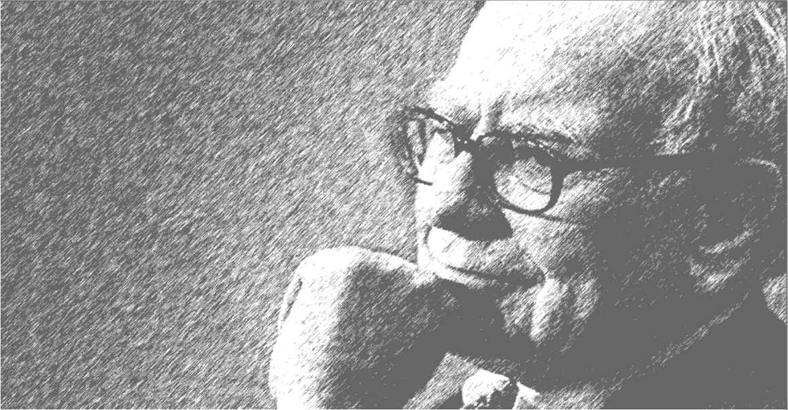

第4章 普通股投资9个案例
第4章 普通股投资9个案例
第4章 普通股投资9个案例

年复一年，巴菲特的投资故事已经成为民间流传的传奇。在每一起
投资案例背后，都有一个独一无二的故事，1973年投资华盛顿邮报不同
于1980年投资盖可保险公司。同样，花了5亿美元投资于大都会公司，帮
助其收购美国广播公司（ABC），也与在可口可乐上投资10亿美元不同。
上述投资又与后来购买富国银行、通用动力、美国运通、IBM、亨氏食品的
投资不同。但对于希望了解巴菲特思想的人而言，所有的投资都具有一
个共同点：让我们有机会观察现实中的企业状况、管理、财务和市场准
则。
所有这些公司，除了大都会之外，目前都仍然留在伯克希尔公司的
投资组合中，继续着它们的繁荣发展，除了华盛顿邮报和通用动力，其他
几个公司都出现在伯克希尔前十名最大投资持股名单中。
在这一章里，我们将逐一分析当年投资案例的历史背景，将更多地
分析巴菲特当时的思考，以及相关的公司、行业和股市。
本章分析的九个投资案例为：
·华盛顿邮报公司
·盖可保险公司
·大都会/ABC公司
·可口可乐公司
·通用动力公司
·富国银行
·美国运通
·IBM（国际商业机器公司）
·亨氏食品
华盛顿邮报公司
1931年，《华盛顿邮报》是美国首都华盛顿五家阅读最为广泛的日
报之一。两年之后，由于拖欠印刷费用，公司处于被接管状态。那年夏
天，公司被拍卖以偿还债权人。金融家尤金·迈耶是个百万富翁，他花了
82.5万美元买下了华盛顿邮报。接下来的二十年，在他的支持下，公司转
亏为盈。报纸的管理权后来转给了菲利普·格雷厄姆，他是个聪明的哈佛
毕业的律师，娶了迈耶的女儿凯瑟琳。1954年，菲利普·格雷厄姆说服老
丈人买下了竞争对手《时代先驱报》。后来，格雷厄姆又买下了《新闻
周刊》和两个电视台。菲利普·格雷厄姆将华盛顿邮报公司从仅有一份报
纸的公司，发展成为拥有报纸、杂志、电视台的多元化媒体公司。悲剧的
是，他于1963年自杀身亡。
格雷厄姆去世后，华盛顿邮报的控制权交到他的妻子凯瑟琳·格雷厄
姆的手中。尽管她没有管理大型企业的经验，但面对商业活动中出现的
困难，她反应迅速，表现不凡。凯瑟琳的成功多归因于她对邮报的天才
影响力。她目睹了父亲和丈夫为了邮报事业的奋斗，意识到为了成功，公
司需要一个决策者，而不是保育员。她说：“我迅速地知道，事情都是在
变化的，你需要做出决定。” [1] 她做出两个对于邮报具有特别影响的决
定：邀请本·布拉德利担任主任编辑，以及后来邀请巴菲特成为公司董
事。布拉德利鼓励凯瑟琳出版五角大楼文件、追查水门事件，后一事件使
《华盛顿邮报》赢得了普利策新闻奖的荣誉。巴菲特则教会凯瑟琳如何
管理一个成功的企业。
巴菲特第一次遇到凯瑟琳是在1971年，那时，他还拥有《纽约客》
杂志的股票。他听说该杂志可能有意出售，于是问凯瑟琳是否有兴趣买
下。尽管这个交易没有实现，但巴菲特对于邮报有了更多的印象。
大约在那个时候，华盛顿邮报的财务结构经历了深刻的变化。在家
族信托的条款下，菲利普和凯瑟琳·格雷厄姆夫妇拥有全部的邮报投票
权。在菲利普·格雷厄姆过世后，凯瑟琳继承了公司控制权。多年以前，
凯瑟琳的父亲授予公司几百个员工很多内部股，以奖励他们对公司的忠
诚和服务，基于这些内部股，他还建立了公司利润分享计划。随着公司
的繁荣，华盛顿邮报的内部股价格从1950年的50美元火箭般蹿升到1971
年的1154美元。这些持有内部股的员工和利润分享计划，希望公司建立
一个交易市场，这同时也是公司处置非生产性现金的一种安排。此外，
格雷厄姆家族还面临着财产继承税方面的考虑。
1971年凯瑟琳决定将华盛顿邮报公司上市，这样就减轻了自己维持
一个股票市场的负担，也让家族的其他继承者更有利地安排他们的财
产。华盛顿邮报公司的股票分为A股和B股两类。A股可以选举公司董
事会多数成员；B股只能选举董事会少数成员。凯瑟琳持有50%的A股，
这样实际上可以较少的股份达到控制公司的目的。
1971年6月，华盛顿邮报发行了135.4万股B股。不同寻常的是，两天
之后，凯瑟琳授权布拉德利出版水门事件调查文件。1972年，公司A股和B
股价格纷纷飙升，从1月的24.75美元涨到12月的38美元。
但是随着华尔街的心情开始变得阴郁，1973年道琼斯工业平均指数
开始下滑，下跌100点到921点 [2] 。华盛顿邮报的股价也开始下滑，5月份
跌到23美元。著名的IBM的股价已经大跌了69点，跌破200日均线，华尔
街的经纪人们议论纷纷，他们警告说这种技术上的击穿预示着市场接
下来更是阴云密布。同月，金价跌破100美元/盎司，美联储将贴现率提高
到6%，道琼斯再次下跌了18个点，这是三年中最大的下挫。到6月份，贴现
率再次提高，道琼斯指数又掉头向下，跌破900点大关。
这期间，巴菲特开始悄悄地买入华盛顿邮报的股票。到6月，他以
22.75美元的均价买入467.150股，共耗资1062.8万美元。
刚开始，凯瑟琳并不紧张，但是想到一个非家族成员的人拥有如此
多的公司股份，即便没有控制权，想想还是令人不安。巴菲特向她保
证，伯克希尔的购买仅仅出于投资目的。为了让她安心，巴菲特将拥有
的投票权授予凯瑟琳的儿子唐·格雷厄姆代为行使。安心之后，凯瑟琳
1974年邀请巴菲特加入公司董事会，不久出任华盛顿邮报财务委员会主
席一职。
巴菲特在邮报中的作用广为人知，在20世纪70年代的印刷工人罢工
期间，他协助凯瑟琳坚持抗衡，他也教授唐·格雷厄姆如何经商、如何扮
演好企业家的角色、如何负起对股东的责任。唐是个热爱学习的人，虚心
听取巴菲特所说的每一个字。多年以后，唐写下承诺：“继续为股东利益
管理好公司，特别是为那些视野超越了季度和年度的长期股东们。我们
不会以收入规模和控制公司的数量来衡量成功。”并誓言用“严格控制成
本”和“有纪律地使用现金”来回报股东。 [3]
准则：简单易懂
巴菲特的祖父曾经在内布拉斯加州的西点市拥有一份周报，并亲
任编辑，他的祖母也在报社里帮忙印刷。他父亲在内布拉斯加大学期间
编辑过《内布拉斯加日报》，巴菲特自己曾经干过《林肯日报》的发行，
有人说，如果巴菲特没有从事投资活动，他最有可能成为一个记者。
1969年，巴菲特买下他的第一个报纸——《奥马哈太阳报》，同时
带有一系列的周刊。尽管他认为高质量的新闻很重要，但他更坚持报纸
首先也是企业，应该以利润为首要考虑，而不仅仅是影响力。拥有《奥
马哈太阳报》让他了解了报纸行业的运作特点，在开始买入华盛顿邮报
时，他已经拥有了四年与报纸相关的经验。
准则：持续的经营历史
巴菲特告诉伯克希尔的股东，他在财务上与华盛顿邮报发生的联
系，可以追溯到13岁的时候。当时，他父亲在国会任职，他当报童每天
派送《华盛顿邮报》和《时代先驱报》。巴菲特喜欢向别人讲述这个
双重路线的送递故事，在菲利普·格雷厄姆代表华盛顿邮报收购《时代先
驱报》之前，少年巴菲特就已经在送报路线上将它们合并了。
很明显，巴菲特注意到了报纸行业利润丰厚的历史，并且他认为
《新闻周刊》杂志也具有可预测的良好未来。华盛顿邮报公司多年以来在
报告中提到广播电台的优良表现，巴菲特从中迅速学习到公司电视台
的价值。巴菲特自身的经历让他相信该公司是个可持续发展的、可靠的
好企业。
准则：良好的长期前景
1984年巴菲特写到：“一家具有主导地位的报纸，其经济价值是优
秀的，是世界上最为优秀的一类。” [4] 请注意，这是巴菲特30年前说的
话，是在互联网的潜力首次被人们认识之前整整十年。20世纪80年代早
期，美国共有1700家报纸，其中大约1600家没有直接的竞争对手。巴菲
特观察到，这些报纸的所有者认为，他们自己每年赚取的可观利润是由
于报纸的新闻质量。事实真相是，即便是一家三流的报纸也能取得不错
的经营业绩，如果它是市区里唯一的报纸。现在，很清楚了，高质量的
报纸具有更高的渗透率，他解释道，但平庸的报纸的广告栏对于广告主
们依然颇具吸引力。城里的每一家公司、每一个房屋卖家，甚至每一个想
了解社区消息的人，都要依靠报纸的流通才能实现信息的传递。就像加
拿大媒体大亨汤姆森勋爵，巴菲特相信拥有了一家报纸，就可以收取城
里每一个想做广告的企业的版权费。
除新闻质量之外，报纸还拥有价值不菲的商誉。如同巴菲特指出的
那样，报纸业对于资本的需要很低，这使它们能轻而易举地将销售额转
化为利润。即使一家报纸安装了昂贵的电脑排版印刷系统，它们也能
迅速地以低工资的成本优势将其付清。在20世纪七八十年代，报纸业能
轻而易举地提高定价，产生高出平均水平的资本回报，减弱通货膨胀的
影响。
准则：确定价值
1973年，华盛顿邮报的总市值为8000万美元，然而，巴菲特说：“大
部分证券分析师、媒体经纪人、媒体执行层都将公司估值为4~5亿美
元。” [5] 为什么巴菲特如此估值？让我们通过数字，看看巴菲特的评估路
径。
我们从当年的股东盈余开始：净利润（1330万美元）加上折旧和摊销
（370万美元），减去资本支出（660万美元），得出1973年公司股东盈余
1040万美元。如果我们用美国政府长期国债的利率（6.81%）去除股东盈
余，那么华盛顿邮报的价值达到1.5亿美元，几乎是市值的两倍，但依然低
于巴菲特的估值。
巴菲特认为，整体而言，一个报纸类公司的资本性支出最终将等同
于折旧和摊销。这样，公司净利润将大约与股东盈余持平。懂得了这个
道理，我们可以简单地将股东盈余除以无风险利率，这样，华盛顿邮报
公司估值结果是1.96亿美元。
如果我们就此打住，假设股东盈余上升的幅度能赶得上通货膨胀的
幅度。但我们知道报纸业拥有非同寻常的提价能力，因为它们大多数在
当地居于垄断地位，其提价幅度可以超过通货膨胀的幅度。如果我们再
做最后一个假设——华盛顿邮报有能力多提价3%，那么公司的估值就接
近3.5亿美元。
巴菲特知道公司当时税前10%的利润率，低于历史上15%的平均记
录，但他相信在凯瑟琳的领导下，公司会重拾雄风，恢复到历史平均水
平。如果税前利润率改善至15%，那么公司现值将多出1.35亿美元，使得
整个公司估值达到4.85亿美元。
准则：以有吸引力的价格买入
即使以最为保守的估值计算，巴菲特还是以半价买入了华盛顿邮
报，但他仍然坚持实际上他的代价仅仅是2.5折。无论如何，有一点是很
清楚的，相对于内在价值，他以巨大的折扣买入。在这个案例中，巴菲特
满足了本·格雷厄姆的前提条件：以折扣价买入能创造安全边际。
准则：净资产收益率
当年巴菲特买入华盛顿邮报时，它的净资产收益率为15.7%，这是
一个报业平均的回报，比标普500指数的成分股公司仅仅略高出一点。
但是，不到五年，邮报的净资产回报率翻了一番，比标普500高出一倍，比
同业高出50%。在接下来的十年，公司保持着这一荣耀，甚至在1988年达
到了36%的高度。
如果我们纵观邮报的表现，尤其是在减去负债的情况下，这些超越
平均水平的回报令人印象深刻。1973年，邮报的长期负债对股东权益的
比率为37%，这一负债率居于整个行业第二高。令人惊讶的是，到了1978
年凯瑟琳减少了70%的公司负债。到了1983年公司长期负债对权益的比
率降低至2.7%，只有整个行业平均水平的十分之一。然而，邮报创造的利
润却比同业高出10%。1986年，在投资了手机电话系统和购买了大都
会/ABC公司的53个电缆系统之后，负债达到异常的3.36亿美元之巨，但
不到一年，负债减少到1.55亿美元。1992年，公司长期负债是0.51亿美元，
长期负债对权益比率为5.5%，而同行平均该指标为42.7%。
准则：利润率
在华盛顿邮报上市6个月时，凯瑟琳会晤了华尔街的证券分析师，
她说，公司的首要事务是追求现有运营的利润最大化。来自电视台和
《新闻周刊》杂志的利润持续攀升，但来自报纸的利润表现平缓，凯瑟琳
说，这是由于高生产成本，即工资引起的。在邮报购买了《时代先驱
报》之后，利润开始上升。每次遇到工会罢工事件（1949、1958、1966、
1968、1969年），管理层通常都满足工会的要求，以避免报纸关门的危
险。这期间，首都华盛顿特区依然拥有三个主流报纸。整个20世纪五
六十年代，不断上升的工资成本侵害了利润。凯瑟琳对华尔街说，这个
问题将会得到解决。
与工会签订的合同在70年代开始到期，凯瑟琳雇请了采取强硬路线
的谈判专家与工会谈判。1974年，邮报挫败了由报纸工会领导的罢工。经
过长时间谈判，印刷工人签署了新合同。在1975年的印刷工人罢工中，邮
报公司立场坚定。这次罢工充满暴力，在罢工期间，工人破坏了印刷车
间，失去了同情心。管理层亲自印刷，报纸工会和印刷工会成员又冲击
警戒线。4个月之后，凯瑟琳宣布公司已经聘用了非工会成员。最后公
司取得了胜利。
70年代早期，财经媒体对于邮报的评价是，“对于华盛顿邮报在盈利
方面的表现，最好的评价恐怕就是给它一个温柔的C”。 [6] 1973年，公司
税前利润率是10.8%，比历史上60年代最高的15%低很多。在与工会成功
谈判签约之后，公司的利润开始改善。到1988年，税前利润率达到31.8%
的高度，而同行平均水平为16.9%，标普工业平均水平只有8.6%。
准则：理性
华盛顿邮报公司为股东产生持续的现金流，因为它产生的现金多于
其需求，管理层面临两个选择：或将钱还给股东，或投资于有利可图的
新机会。巴菲特倾向于公司将资本还给股东。在凯瑟琳担任邮报总裁期
间，它是业内第一家大笔回购股票的公司。在1975~1991年，公司令人吃
惊地以平均60美元/股的价格回购了43%的股份。
公司还以提高分红的方式将现金返还给股东。1990年，面对公司巨
大的现金储备，华盛顿邮报公司决定将年度每股分红从1.84美元提高到
4美元，升幅117%。
在20世纪90年代早期，巴菲特得出结论，总体上与美国其他产业相
比，报纸业的利润高于平均水平。但是，该行业比他和其他分析师们早些
年预测的价值有所下降，主要原因在于报纸丧失了定价弹性。早年，如果
经济放缓、广告主削减费用，报纸可以通过增加版面保持利润率。但今
天，报纸已经不再居于垄断地位。广告主们找到了更便宜的方法寻找客
户——有线电视、直邮、报纸夹页等，但最重要的是互联网的广泛运
用，它们分走了报纸业的大蛋糕。
到1991年，巴菲特意识到，这些影响利润的变化，既是短期周期性的
变化，也代表了一个长期的根本性变化。他说：“实际上，报纸、电视、
杂志这类媒体开始像普通商品型企业一样运转，不再是特许经营权类
型的企业了。” [7] 周期性的变化会损害公司的短期利润，但不影响公司
的内在价值。根本性的变化则会减少公司利润，也影响内在价值。不
过，他认为华盛顿邮报的内在价值受到的负面影响低于同行，因为首
先，邮报0.5亿美元的负债被其持有的4亿美元现金所抵消，邮报基本是唯
一一家几乎没有负债的公司。“结果是，它资产价值的缩水不会因为其债
务杠杆而加剧。”巴菲特说。 [8]
准则：一美元前提
巴菲特希望选择这样的公司，它每一美元的留存至少产生一美元的
市值。这个测试能很快区分出，长期而言，管理层是否最优化使用公司
的资本。如果留存的资金被投资于高于平均水平的对象，其证明就是公
司市值会相应地上升。
自1973~1992年，华盛顿邮报公司赚了17.55亿美元，其中付给股东
2.99亿美元，留存了14.56亿美元进行再投资。1973年，公司总市值为0.8
亿美元，到了1992年，市值成长为26.3亿美元。在这20年中，每一美元的留
存为股东创造了1.81美元的市值。
评价凯瑟琳在华盛顿邮报的成功领导还有一个方法，威廉·桑代克在
他具有非凡洞察力的书——《局外人：八个非传统的CEO和他们的成功
理性蓝图》中，帮助我们既观察公司，也欣赏CEO的表现，“从1971年
IPO上市，到1993年（凯瑟琳）离任，公司为股东提供了年复利22.3%的回
报，使得标普（7.4%）和同行（12.4%）相形见绌。在IPO时投资的每一美
元，在她退休之际达到了89美元，相形之下，标普是5美元，同行是14美
元。凯瑟琳的表现超过标普8倍、同行6倍，在其22年的职业生涯中，她是
国内同行中的最佳CEO。” [9]
盖可保险公司
盖可保险公司，全称为政府雇员保险公司，成立于1936年。创始人利
奥·古德温是一名保险会计 [10] ，他设想成立一家向低风险驾驶员提供保
险的公司，并且通过直接寄信的方式销售保险。他发现政府工作人员作
为一个整体，比普通公众发生交通事故少。他也了解到通过直接寄送保
单的直销方式，公司能减少10%~25%的中介费用。古德温明白如果他能
区分出谨慎驾驶者，并采用直销保单的方式，他将成功在握。
古德温邀请了得克萨斯州沃思堡的银行家克利夫斯·雷亚作为合伙
人，古德温投资2.5万美元，持有25%的股份；瑞亚投资7.5万美元，持有
75%的股份。1948年公司从得克萨斯州搬到华盛顿特区。当年，瑞亚家族
决定卖掉其持有的股份，瑞亚请巴尔的摩的债券推销员洛里默·戴维森帮
忙联系此事。戴维森找到一位华盛顿特区的律师戴维·克里格帮忙找买
家，克里格找到了格雷厄姆-纽曼投资公司。格雷厄姆决定以72万美元买
下瑞亚手中一半的股份，克里格和戴维森两人联合起来买下另外一半。
此外，因为格雷厄姆-纽曼投资公司是个合伙人性质的投资基金，所以证
券交易委员会根据相关法规强迫他们持股不得超过盖可保险公司10%的
股份，这样格雷厄姆将超出的部分分配给了公司的合伙人。多年以后，当
盖可成为数以十亿美元计的大公司时，仅格雷厄姆自己持有的部分就
价值数百万美元。
曾经的债券推销员洛里默·戴维森后来在古德温的邀请下，加入盖可
的管理团队。1958年，他出任公司董事长，并领导公司直到1970年。在
此期间，公司将汽车保险覆盖人群的范围扩展到专业人士、管理人士、
高科技人群和行政事务人员。盖可的市场占有率从15%提高到50%。公
司的新战略是成功的，承保利润飙升，因为新扩展的人群就像政府雇员
们一样谨慎驾驶。
1960~1970年是公司的黄金时代，保险监督委员会也对盖可的成功
运营赞叹不已，公司股东为股价的飙升欢欣雀跃。公司保费收入对盈余
比达到5∶1，这个比率测量的是公司保费收入相对于保单持有人的索赔。
因此，保监会对盖可保险印象极佳，允许他们超过这一指标的行业平均。
但到了20世纪60年代末，盖可的光芒开始暗淡。1969年公司宣布低
估了储备金，额度是1000万美元，因此公司非但没有盈利250万美元，反
而录得年度亏损。会计收入的调整在下一年度继续进行，公司再次低估
储备金2500万美元，这样，1970年公司发生了灾难性亏损。
保险公司从投保人那里收到的费用叫做保费收入，从这些保费中，
公司承诺在承保期间，为出险的投保人赔偿。保险公司的成本包括索
赔、损失成本、行政管理费用。这些费用被倒推分为两个部分：索赔和成
本。这些在公司做出预算后，从上一年度的收入中提取预留资金。由于诉
讼等原因，索赔、理赔工作经常牵涉很多的法律和医疗成本，可能需要
数年时间。盖可公司面临的麻烦不仅是它卖出去的保单产生亏损，而
且还有之前的承保预留拨备不足。
1970年戴维森退休了，他的位置由那位华盛顿律师戴维·克里格接
任，诺曼·吉登作为总裁和CEO负责公司的日常运作。接下来发生的事情，
显示了盖可公司想走出1969年、1970年拨备问题的烂摊子。从1970~1974
年，公司新汽车保单的成长率为11%，相比较而言，1965~1970年是7%。此
外，公司在1972年进行了代价高昂、雄心勃勃的多元化，投资于房地产、
电脑设备和人力资源方面。
到了1973年，面对激烈的市场竞争，公司降低了核保标准以扩大市
场份额。这样，盖可首次将蓝领工人和21岁以下驾驶员人群纳入投保
范围，这两类人员并非谨慎的驾驶人群。这两个战略性的转变——公司
的多元化和扩大保险涵盖人群——几乎与1973年政府放开保险价格管
制同时发生。不久，随之而来的是，全社会汽车维修和医疗成本的大幅攀
升。
1974年第四季度，盖可保险公司的承保损失开始大幅上升。在其28
年的历史上，公司首次出现了高达600万美元的损失。令人惊讶的是，公
司保费对盈余的比率仍然是5∶1。然而，公司继续扩张，1975年的第二季
度，盖可报出更大的亏损，并宣布取消0.80美元的分红计划。
吉登总裁聘请了知名的明德精算咨询公司（Miuiman&Robertson），
希望它们能提出建议以扭转下滑的局面。研究结果并不乐观，咨询公司
认为盖可的拨备金短缺3500万~7000万美元，需要补充新的资本才能生
存。盖可董事会采纳了咨询公司的建议，并向股东宣布。此外，盖可预计
1975年的亏损将达到惊人的1.4亿美元（最终实际是1.26亿美元）。对这个
令人震惊的消息，股东们和保监会都傻眼了。
1972年，盖可公司的股价最高达到每股61美元，到1973年，跌去一
半。1974年，跌去更多，达到10美元。1975年，董事会宣布预计的巨额亏损
时，跌到7美元。几个股东实在咽不下这口气，以欺诈罪起诉公司。盖可
公司的管理层申辩说，公司的困境是由通货膨胀和离谱的法规、医疗
费用引起的。但问题是，这些难题是所有保险公司都要面对的，又不是盖
可一家独对。
盖可的问题在于脱离了它原有的只承保谨慎驾驶者的传统成功方
法。更要命的是，它放松了公司的成本控制。由于公司降低了投保人的准
入标准，它的新保单出险率以及出险频率都高出原来的预期，导致拨备
不足。在它低估了承保风险的同时，又提升了固定成本。
1976年3月的盖可公司年会，吉登建议公司换一位新总裁或许能改
善公司状况，他宣布公司董事会已经开始寻找一位新管理者。此时，公
司股价已经下跌到5美元并依然摇摇欲坠。 [11]
1976年年会之后，盖可宣布来自旅行家集团的43岁的市场总监约翰
·J·伯恩成为公司的新总裁。新总裁上任不久，公司就宣布一个7600万美
元的优先股集资计划，以提升公司资本金。但是，投资者非常失望，股价
下滑至2美元。
在此期间，巴菲特正在悄悄地、持续地买进盖可的股票。当公司摇
摇欲坠，处于破产边缘时，他投资了410万美元，以3.18美元的均价买进
了1294308股。
准则：简单易懂
早在1950年，巴菲特在哥伦比亚大学求学时，他的老师格雷厄姆就
是盖可保险公司的董事。这激起了年轻巴菲特的好奇心，一个周末他独
自前往华盛顿特区去拜访公司。周六，他敲开了公司的大门，看门人让
他进来，并带他来到当天唯一当值的经理人——洛里默·戴维森那里。巴
菲特提了一系列问题，戴维森用了五个小时，向这个年轻人解释公司
的与众不同之处。这样的“单聊”方式一向是巴菲特的另一位导师菲利
普·费雪特别推崇的。
稍后，巴菲特回到父亲在奥马哈的经纪公司，向公司的客户推荐盖
可保险股票。他自己投资了1万美元在这只股票上，大约相当于资金的
2/3。很多投资人对于这个建议不以为然，甚至有当地的保险经纪人向巴
菲特的父亲抱怨，这个盖可保险根本就是一个不给保险经纪人活路的公
司。伴随着这样的挫败感，巴菲特在一年之后将持有的盖可股票卖出，赚
了50%。自那之后，他再也没有买过这家公司的股票，直到1976年，相隔整
整26年。
巴菲特继续胸有成竹地向他的客户推荐保险公司的股票，他以3倍
市盈率（PE）买下堪萨斯城市寿险公司，还将马萨诸塞保障人寿公司纳入
伯克希尔旗下，1967年他还买下了国民保障公司的控股权。在接下来的
十年，国民保障公司的CEO杰克·林沃尔特教会了巴菲特保险行业的运行
机制。这个经历非常难得，令巴菲特了解了保险公司的赚钱方式。这也给
了巴菲特信心，虽然盖可保险公司正摇摇欲坠。
伯克希尔除了投资410万美元在盖可股票之外，还投资了1940万美
元参与其可转换优先股。两年之后，伯克希尔将优先股转换为普通股，
1980年巴菲特又增持了1900万美元的投资。自1976~1980年，伯克希尔
共投资了4700万美元，购买了720万股，均价为6.67美元/股。1980年这些
投资升值123%，市场价值1.05亿美元，成为巴菲特投资组合中的最大持
股。
准则：持续的经营历史
在盖可保险这个案例中，我们的第一反应或许是巴菲特违反了他的
行为准则，很明显，在1975年和1976年，盖可公司的运营成果是非连续
性的。当伯恩成为盖可总裁时，他做了一系列的改变，但巴菲特说，这
种改变实质上并非根本改变。那么，我们如何理解伯克希尔购买盖可的
股票呢？
可以肯定的是，伯恩成功地将公司在行业内重新定位。但更重要的
是，巴菲特认为，公司没有到快毁灭的地步，仅仅是受了伤，其低成本、
无中介的特许经营权优势依然存在。此外，那些谨慎的驾驶者作为公司
的客户依然贡献着可观的利润。在价格优势方面，盖可依旧可以击败竞
争对手。
数十年来，盖可保险公司不断投资强化它的竞争优势，为股东赚取
了大量利润。巴菲特认为这些原有的优势依然存在。70年代遇到的这次
经营危机，没有对其特许经营权造成伤害，尽管有运营和财务方面的麻
烦，但即便其净资产为零，盖可仍然值很多钱，因为它的特许经营权仍
在。
准则：良好的长期前景
尽管汽车保险属于普通商业型产品，但巴菲特认为如果能保持持续
的、广泛的成本优势，一个普通的企业也能赚钱。这个描述用在盖可公
司上很贴切。我们也知道管理水平是企业最为重要的变量，自伯克希尔
投资入股之后，盖可保险的管理证明了其具有竞争力优势。
准则：坦诚
约翰J.伯恩在1976年接任盖可总裁之后，马上说服保监部门和同行，
使他们相信如果盖可公司倒闭，对整个行业都有不利影响。他提出的
拯救公司计划包括：募集新的资本金、取得再保险条款、其他保险公司分
保一部分盖可的业务，以及大刀阔斧地削减成本费用。伯恩称之为“操
作引导”，其目标在于使公司重返盈利轨道。
上任第一年，伯恩关闭了100个办公室，将员工由7000人减少到4000
人，将保险执照的营业范围扩大到新泽西州和马萨诸塞州。伯恩告诉新
泽西州的保监部门，原有保单到期后，他不打算续保这些每年消耗公司
3000万美元的25万个保单。接下来，当伯恩检查客户信息时，他发现公
司需要更新的这些保单价格定低了9%。他废除了允许客户自己更新信
息，以延续保单的电脑系统。当盖可为保单重新定价时，40万个客户决
定不再续保。总之，伯恩的行动令公司的保单持有人从270万人减少到
150万人，盖可保险公司在全国的排名从1975年的第18名，下降到一年之
后的第31名。尽管如此，公司在1976年亏损1.26亿美元之后，1977年完成
营业收入4.63亿美元，盈利达到了令人印象深刻的0.586亿美元。这是伯
恩上任之后的第一个完整年度。
毫无疑问，盖可保险戏剧性的复苏伯恩居功至伟，他坚定地控制
成本的原则，使得公司持续复苏。伯恩告诉股东们，公司必须回归最
初的原则，即作为一个低成本保险提供商。他的报告揭示了公司如何持
续地降低成本。甚至，到了1981年，公司成为美国第七大汽车保险公司
时，伯恩仍然和其他两名高管共用一个秘书。他引以为豪的是，盖可公
司的每个员工管理的保单数量从以前的250个提高到378个。在这些变革
的年头里，伯恩是公司伟大的驱动力。巴菲特说：伯恩就像是个养鸡场
的农场主，他将鸵鸟蛋扔进母鸡舍，然后说：“嗨，这是竞争的结果！”
[12]
连续数年，伯恩愉快地报告着盖可成功的进展；遇到坏情况时，他
也会坦诚地向股东披露。1985年，公司出现暂时的困难，出现了承保亏
损。在当年第一季度的报告中，伯恩写道：好比飞机上的机长告诉他的
乘客们：“坏消息是我们亏损了，好消息是我们为伟大的时刻做了准
备。” [13] 很快，公司重新站稳脚跟，并在下一年度重新取得了盈利的业
绩。这里，更重要的是，公司赢得了对股东开诚布公的好名声。
准则：理性
年复一年，伯恩证明了盖可公司管理层的理性。上任之后，他有意控
制公司的增长速度。伯恩指出，如果公司有意识地以慢一些的速度发展，
则更能监控那些损失和成本，这样做比以两倍的速度发展、却财务失控
更有利可图。实际上，这种可控发展持续地为盖可创造了超额的回报。
另一个理性的标志是公司处理现金的态度。
自1983年起，公司用留存现金进行再投资已不合算，于是决定将现
金回馈股东。从1983~1992年，盖可回购了3000万股股票（在分拆之后的
基础上），减少了公司30%的普通股总股本。除了回购之外，公司提高了
分红数量。1980年公司每股分红0.09美元（复权调整）；到1992年，达到
0.60美元，年化涨幅为21%。
准则：净资产收益率
1980年，盖可的净资产收益率达到30.8%，几乎两倍于同行业。80年
代后期，公司净资产收益率开始下降，不是因为生意不好，而是因为净资
产增长快于盈利。因此，为了维持一个可以接受的净资产收益率，符合逻
辑的做法是提高分红，以及回购股份。
准则：利润率
投资者可用几种不同的方式衡量保险公司的盈利能力，税前利润率
是最好的测量方法之一。从1983~1992年的十年，盖可保险税前利润率非
常均衡稳定，波动极小。
众所周知，盖可保险对于成本的关注一丝不苟，并且对于处理理赔
的成本也密切跟踪。在此期间，盖可的成本对保费收入维持在平均15%
——仅有行业平均水平的一半。这个低比率反映了盖可公司不需要支付
给保险中介所节约的成本。
盖可公司的成本和承保损失的综合比率，被证明高于同行业平均水
平。从1977~1992年，行业平均指标仅仅战胜过盖可公司一次，发生在
1977年。自那之后，盖可的该综合指标平均为97.1%，比行业平均水平高
出十个百分点。盖可仅有两次承保亏损：一次是1985年，另一次是1992
年。1992年是因为出乎意料、席卷全国的自然灾害所致，如果没有发生安
德鲁飓风和其他严重的风暴，盖可的综合比率应该是93.8%。
准则：确定价值
当巴菲特开始为伯克希尔公司买入盖可保险股票时，公司正面临
破产危机。但他认为盖可仍然价值连城，因为即便净资产为负，公司仍
然拥有保险经营特许权。由于公司在1976年没有盈利，无法用贴现的方
法推算公司的现值，但尽管公司的未来现金流具有不确定性，巴菲特仍
认定公司会存活并且未来会赚钱，但是何时可以实现还是未知数，因此
颇具争议。
1980年，巴菲特持有公司三分之一的股份，投资本金为0.47亿美元，
那年盖可的总市值是2.96亿美元，巴菲特认为公司具有极大的安全边
际。1980年公司营业收入为7.05亿美元，盈利0.6亿美元。折算下来，伯克
希尔持有的部分盈利为0.2亿美元。按照巴菲特的说法：“买入一个具有一
流经济特性和前景光明的企业，预期0.2亿美元的盈利至少要花2亿美
元。”如果想控股，需要花更多的钱。 [14]
考虑到约翰·伯尔·威廉斯的贴现估值理论，巴菲特的2亿美元估值
是真实可靠的。假设，盖可公司在没有新增投资的前提下，保持0.6亿美
元的盈利状态，用当年美国30年期国债利率12%做贴现，公司的现值应
该达到5亿美元——几乎两倍于盖可的市值。如果公司盈利的真实成长
率能达到2%，或是未扣除当时通货膨胀率的15% [15] ，那么盖可的现值
将到达6亿美元，伯克希尔的持股价值将为2亿美元。换句话说，盖可的
市值比其内在价值低一半还多。
准则：一美元前提
1980~1992年，盖可保险公司的市值从2.96亿美元增长到46亿美元，
增加43亿美元。在这13年里，公司盈利17亿美元，支付红利2.80亿美元，留
存14亿美元作为再投资。公司的每一美元留存都为股东创造了3.12美元
的市值。这个成就表明，盖可保险公司不仅具有优秀的管理和营销利
基，而且还具有善用股东资本之长。
此外，盖可保险的出类拔萃还体现在：1980年投资于公司的每一美
元，到1992年升值为27.89美元。这是令人震惊的29.2%的年复利回报，远
远超出行业平均水平和标普500指数，这两个指标同期仅录得8.9%的年
回报。
大都会/ABC公司
大都会公司出身于新闻行业，1954年，著名的记者洛厄尔·托马斯和
他的业务经理弗兰克·史密斯，与几个同事一起买下了哈德逊山谷广播公
司，该公司包括了纽约州奥尔巴尼市的电视台和调频广播电台。那时，
后来成为大都会公司董事长的托马斯·墨菲还在另一家公司作产品经理。
公司的发起人之一弗兰克·史密斯与墨菲的父亲，正好是高尔夫球的球
友，他于是雇请了年轻的墨菲管理公司的电视台。
1957年公司收购了罗利·达勒姆电视台，并更名为大都会广播公司，
以反映奥尔巴尼和罗利各自是其州的首府（注：奥尔巴尼是纽约州的首
府，罗利是北卡罗来纳州的首府）。
1960年，墨菲雇请了丹·伯克管理奥尔巴尼的电视台，他是墨菲哈佛
大学同学吉姆·伯克的兄弟，吉姆·伯克也是个非凡之人，他后来成为强生
公司的董事长。丹·伯克是奥尔巴尼本地人，他留下来管理电视台，而墨
菲返回纽约。1964年墨菲被任命为大都会公司总裁，自此开始，公司渐
渐成为美国商界最为成功的企业之一。在接下来的30年中，墨菲和伯克
这对搭档共同管理公司，进行了30余起广播和出版业的并购，其中最为
著名的是1985年收购美国广播公司（ABC）。
巴菲特首次遇见墨菲是20世纪60年代末在纽约，墨菲一个同学安
排的一次午餐会上。开始时，墨菲对巴菲特留下深刻的印象，想邀请他
加入大都会的董事会 [16] 。巴菲特婉拒了邀请，但是他和墨菲成为了很
好的朋友，很多年都保持联系。巴菲特在1977年投资了大都会公司的股
票，但次年，就卖出了所持股份，没有解释原因，但是获利。
1984年12月，墨菲与ABC主席伦纳德·戈登森联系，想将两家公司合
并。开始这个建议被回绝了，墨菲在1985年再次联系戈登森，因为联邦通
讯委员会通过了新法规，允许一个公司可以拥有的电视台和广播电台
的数量由原来的7个提高到12个，该法案于当年4月生效。这一次，戈登森
同意了，他当时已经79岁高龄，很关心继任者问题。尽管ABC公司内部
有几个潜在的候选接班人，但他觉得都还不是很成熟，而墨菲和伯克这
对搭档在美国媒体新闻界被认为是最佳的经理人。戈登森认为通过与大
都会公司合并，公司将会保留在最强有力的优秀管理层手中。
双方谈判的时候，ABC带着收费高昂的投资银行家团队，墨菲像往
常一样，只带着他最为信赖的朋友——巴菲特。两个公司的合并是电视
网络历史上的第一次，也是当时最大的媒体合并案例。
大都会给ABC的出价是每股121美元（包括118美元时现金，以及价
值3美元的购买10%大都会股票的期权），这个价格是发表声明的前一
天，ABC股票收盘价的两倍。为了这个35亿美元的交易，大都会公司需要
从银行借款21亿美元，并出售那些不再允许持有的资产，例如有线资
产，给华盛顿邮报公司，出售重叠的电视台和广播电台大约获得9亿美
元。最后的5亿美元来自巴菲特，他同意伯克希尔公司认购大都会公司以
172.50美元发售的新股，共300万股。墨菲此时再次邀请他的好朋友加入
董事会，这次，巴菲特同意了。
准则：简单易懂
在参与华盛顿邮报董事会超过十年之久后，巴菲特懂得了电视、广
播、报纸和杂志的业务运作。巴菲特在这方面的知识增长还来源于1978
年和1984年伯克希尔曾经购买过ABC的股票。
准则：持续的经营历史
无论是大都会公司，还是ABC公司，都有超过30年盈利的良好的经
营历史。ABC公司从1975年到1984年，平均净资产回报率为17%，净资产
负债率为21%。大都会公司在合并之前的十年，平均净资产回报率为
19%，净资产负债率为20%。
准则：良好的长期前景
广播电视网络类公司长期享有超越平均的经济成果，基于很多和报
纸行业一样的原因，它们拥有巨大的商誉。一旦广播电视塔建成，后续资
本和人力的投入需求极小，并且没有存货。电影、节目等都可以先播放
着，等收了广告费之后再结算给制作企业。这样，一般说来，广播公司
能产生超越平均水平的资本回报，以及产生超出需求的大量现金。
广播网络类的公司最大的风险，包括政府管制、科技的变化，以及
切换的广告投放费用。政府有可能拒绝公司牌照到期后的重新申请，当
然这很少发生。在1985年的时候，有线的影响很小，尽管一些观众喜欢看
有线电视，但绝大多数观众依然倾向于网络电视。整个80年代，针对那
些花钱大手大脚的消费者的广告费用增长大大超过GDP的增长速度。为
了能接触到大规模的观众，广告商们仍然依赖广播电视网络。巴菲特
认为广播网络商以及出版商的经济状况高于平均水平，至少在1985年
看，它们的前景非常光明。
准则：确定价值
伯克希尔投资大都会公司5.17亿美元，是当时巴菲特做过的所有投
资中最大的单笔投资，他当时是如何确定大都会和ABC公司合并后的
价值的值得探讨。墨菲出售新公司300万的股份给巴菲特，每股172.50美
元。但我们知道价格和价值是两回事，正如我们已经研究过的巴菲特的
行为，只有当价格对于公司内在价值有明显的安全边际之时，他才会
出手。然而，在买入大都会/ABC公司时，巴菲特承认有所妥协。
如果我们用10%的贴现率（这是1985年时美国30年国债的利率水
平）去乘172.50美元，然后在乘以1600万股股份（当时大都会总股本1300
万股，加上给巴菲特的300万股），那么，这个公司的现值要求公司具有
2.76亿美元的盈利能力。
1984年，大都会公司的盈利在去除折旧和摊销之后是1.22亿美元，
ABC公司在去除折旧和摊销之后是3.2亿美元，两个相加是4.42亿美元。
但两公司合并后，债务沉重，墨菲借了21亿美元，每年需支付利息2.2亿美
元。这样，新公司的盈利大约只有2亿美元。
额外的考量因素还有，墨菲在削减成本、提高现金流方面名声在外。
大都会公司的运营利润率为29%，ABC公司是11%。如果墨菲能将ABC公
司的运营利润率提高1/3到15%，那么公司每年将多增收益1.25亿美元，
合并后的新公司盈利将是3.25亿美元。一个具有1600万股本、盈利3.25亿
美元的公司以10%的贴现率计算应该每股值203美元——距离巴菲特的
买入成本172.50美元有15%的安全边际。巴菲特惬意地说：“这笔交易，
格雷厄姆也会鼓掌叫好的。”他指的是他的导师本·格雷厄姆。 [17]
如果我们再做一些假设，巴菲特的安全边际还能扩大。巴菲特说传
统智慧认为，报纸、杂志、电视台能够每年提价6%——不需要额外的资
本投入 [18] 。他解释道，原因在于资本支付与折旧率相当，运作资本的需
要很少。因此，收入几乎可以被认为是利润。这意味着，媒体所有者拥有
了一台不需要增添更多资本，在可见的未来，却能以6%的速度永续增长
的年金机器。与此相对应的例子是，一家公司需要不断增添新投资才能
发展。
如果你拥有一个媒体公司，每年赚100万美元，预计年增长率为6%，
这个公司约价值2500万美元（计算公式是：100万美元÷（10%的无风险
利率-6%的增长率））。另外一个公司每年也赚100万美元，但没有新资金
投入的话，增长率为0，它将仅值1000万美元（计算公式是：100万美元
÷10%）。
如果我们将上述公式代入大都会公司案例中使用，公司的估值将从
203美元/股，提高到507美元，这意味着巴菲特支付的172.50美元具有了
66%的安全边际。但是在这个假设中有了太多的“如果”。墨菲能将大都
会公司的部分资产卖出9亿美元的价钱吗？（实际上，卖了12亿美元。）
他能改善ABC的运营利润率吗？他能持续增加广告收入吗？
巴菲特能在大都会公司投资中，获得显著安全边际的原因是复杂
的。首先，大都会公司的股价已经上涨多年。墨菲和伯克这对绝佳拍档干
得不错，而公司股价也对此有所反映。当年盖可保险公司遇到暂时的经
营困难，导致股价大跌，巴菲特可以便宜买入，这样的机会没有在大都
会股票上重演。而且，股市的大势也在持续上升，似乎也不给予配合。因
为巴菲特这次涉及的是二级市场的交易，新股股价需接近大都会股票的
二级市场交易价格。
尽管需要接受股价的不尽如人意之处，巴菲特还是对这些股票价
格的迅速上升感到满意。1985年3月15日，星期五，大都会的股价是176美
元/股，3月18日周一下午，公司宣布了合并ABC的新闻。次日收盘，股价
达到202.75美元。四天时间，股价升26美元，上升15%。巴菲特获利9000
万美元，而新股认购的交易要到1986年的1月才完成。
巴菲特在购买大都会时的安全边际大大小于其他投资案例，为什么
他会这么做？答案是汤姆·墨菲。如果不是因为有墨菲，巴菲特承认他不
会投资大都会，墨菲就是巴菲特的安全边际。大都会/ABC公司是家卓越
的企业，是吸引巴菲特的企业类型，墨菲也有其特殊之处，约翰·伯恩曾
说：“沃伦崇敬汤姆·墨菲，与他合伙一起做事本身就是一件很具吸引力
的事。” [19]
大都会的管理方式是去中心化，墨菲和伯克尽可能雇请最好的工作
人员，然后让他们独当一面，所有的决策都自主做出。伯克在与墨菲合
作的早期发现这一规律，当年伯克管理阿尔伯尼电视台时，每周将最新
的情况报告给墨菲，但墨菲从来不回复，后来，墨菲对伯克说：“我不会
来阿尔伯尼，除非你邀请我，或你被开除了。” [20] 墨菲和伯克为旗下每一
个公司做出预算，并每个季度进行监控，除了这两点，管理层像经营自己
的企业一样。墨菲曾说：“我们对他们寄予厚望。” [21]
大都会的管理层被寄予厚望的第一要务是控制成本，如果他们没有
做到这一点，墨菲就会亲自出马。大都会合并ABC公司时，墨菲控制成
本的天分实在是太必要了。广播电视网络业通常看重的是传播的渗透
率，而不是利润。他们考虑如何提高渗透率，而不是考虑成本。在墨菲接
手之后，这种心态戛然而止。在ABC精心挑选的成员们的帮助下，墨菲重
新制定了工资、津贴和费用标准。在支付了慷慨的遣散费之后，解雇了
1500名员工。ABC公司供公司高层使用的餐厅和专用电梯被关闭了。墨
菲首次访问公司时乘坐的豪华轿车也被处理了，他再去公司时，坐的是
出租车。
这样的成本意识贯穿于大都会公司，公司在费城名列第一的电视台
——WPVI，雇员有100人，相比之下，同城的CBS有150人。在墨菲来ABC
之前，公司由60人管理5个电视台，在合并之后不久，6个人可以管理8个
台。在纽约的WABC-TV，雇佣600人管理，产生30%的税前利润；在墨菲重
新配置了人员之后，仅雇用400人，产生的税前利润超过50%。一旦成本危
机解除，墨菲就交给伯克进行日常管理，他则专注于收购和股东资产。
准则：抗拒惯性驱使
广播电视网络行业的基本状况，保证了大都会公司能产生充足的现
金流，行业的基本经济特征，加上墨菲的控制成本的偏好，意味着大都会
公司产生的现金流极为可观。从1988年到1992年，大都会公司产生了23
亿美元可支配现金。在这种情况下，很多管理者会无法抗拒花钱的诱惑，
会去收购新业务、扩张公司的版图。墨菲也买了很少的一些新业务。
1990年，他花了6100万美元进行了小型收购。他说，在整个市场上绝大
多数传媒企业的价格过高。
收购兼并是大都会公司非常重要的成长方式。墨菲一直在留心市场
上是否有合适的传媒行业资产出售，但他始终坚守着“拒付高价”的纪
律。拥有巨额现金的大都会公司可以轻而易举地吞下任何公司，但就像
《商业周刊》杂志报道的那样：“墨菲有时会等待数年，直到合适的收购
对象出现，他从来不会因为手中拥有资源而随意浪费这种资源。” [22]
墨菲和伯克意识到，传媒行业是有周期性的，如果使用财务杠杆进
行不恰当的收购，股东的风险将无法接受。伯克说：“墨菲从不感情用
事。” [23]
一家公司赚取的现金多于再投资的需要时，可以收购成长型企
业、偿还债务和分红回馈股东。因为墨菲不愿冒高价收购企业的风
险，他选择偿还债务和回购股票。1986年，在收购ABC之后，大都会公司
总的长期负债是18亿美元，净资产负债率是48.6%。1986年年底，公司持
有的现金和现金等价物大约为1600万美元。到1992年，长期债务降到9.64
亿美元，净资产负债率降到20%，同时，公司的现金及现金等价物上升到
12亿美元。这意味着公司几乎没有负债。
墨菲通过减少负债的形式，大大改善了大都会公司的资产负债表，
减少了公司风险。他的下一步是提升公司价值。
准则：一美元前提
1985~1992年，大都会/ABC公司的市值从29亿美元增长到83亿美元，
在此期间，公司保留了27亿美元的盈余，因此，每一美元的留存创造了
2.01美元的市值。考虑到公司挺过了1990~1991年经济周期的萧条期，以
及有线电视网的出现造成其内在价值的降低，这个成就尤其值得一提。
伯克希尔在大都会的投资从5.17亿美元升值为15亿美元，折合年复利回
报14.5%，这个表现优于投资哥伦比亚广播公司（CBS），也超过标普500
指数的表现。
准则：理性
1988年大都会公司宣布将回购公司不多于200万股股票，相当于11%
的总股本。1989年，公司支付2.33亿美元回购52.3万股，均价445美元/股，
7.3倍于公司运营现金流，相对于同业公司的股价是10~12倍的现金流。第
二年，公司回购92.6万股，均价为477美元，7.6倍于运营现金流。1992年，
公司继续回购股份，以均价434美元回购27万股，8.2倍于现金流。墨菲重
申，购买自家公司的代价较购买行业内其他公司为优。1988~1992年，大
都会公司一共投资8.66亿美元，回购195.3万股。
1993年11月，公司宣布以荷兰式拍卖方式回购最多200万股，价格在
每股590~630美元。伯克希尔以持有的300万股中的100万股参与了此次
拍卖。这次行动引发了广泛的投机活动。是公司找不到合适的投资机
会吗？巴菲特出售1/3持股是因为不再看好公司吗？大都会最终回购了
110万股——其中100万股来自伯克希尔——均价为630美元/股。巴菲特
收回了6.3亿美元，并且没有造成公司股价的大幅波动，仍旧是第一大股
东，持有公司13%的股权。
多年以来，巴菲特观察过无数公司的运营和管理，大都会公司是在
国内公众公司中最好的。为了证明这一点，在他买入公司时，他就将未
来11年的投票权交给了墨菲和伯克，条件是只要他们中的任何一位仍然
继续管理该公司。如果这还不足以让你体会巴菲特对他们的高度信任，
请看他曾说过的：“墨菲和伯克不仅是优秀的管理人，而且是人们愿意将
女儿出嫁的好对象。” [24]
可口可乐公司
1988年秋天，可口可乐总裁唐纳德·基奥发现有人在巨量买入公司的
股票。经历了1987年股市崩盘，可口可乐的股价较之崩盘前的高价低
25%。但股价已经触及地板价，因为“一些神秘的买家通过大宗交易吃
货。”当基奥发现所有这些买单均来自中西部的经纪商时，他突然想到
了他的朋友沃伦·巴菲特，并决定打个电话给他。
“你好，沃伦，”基奥开始说，“你不是恰好正在买入可口可乐
吧？”巴菲特顿了一下，然后说：“巧得很，我正在买入。但是如果你能在
我发表声明之前保持沉默，我将非常感激。” [25] 如果巴菲特买入可口可
乐股票的消息走漏，人们将会蜂拥而进，最终推高股价，那伯克希尔的
入货目标就可能无法完成。
1989年春天，伯克希尔的股东们获悉巴菲特动用10.2亿美元购买可
口可乐的股票，占到可口可乐公司股本的7%，也是伯克希尔投资组合的
三分之一。这是时至今日，伯克希尔最大的单笔投资，令华尔街都挠
头。对这家卖汽水的百年老店，巴菲特的出价是5倍市净率和超过15倍
的市盈率，均较市场有溢价。奥马哈的先知到底看到了什么别人没有看
见的东西？
可口可乐是世界上最大的饮料公司，在全世界200多个国家销售超
过500种充气和不充气饮料。在这500个品种里，有15个品牌估值超过10
亿美元，包括可口可乐、健怡可乐、芬达、雪碧、维他命水、动乐、美汁
源、简易、乔治亚、戴尔山谷。
巴菲特与可口可乐的关系，可以回溯到他的童年时代，他5岁时第一
次喝到可口可乐。不久之后，他就开始显现出企业家精神，你或许还记
得第1章里提到的，他花25美分批发来六罐可乐，然后以5美分一个的价
钱卖出去。在接下来的50年里，虽然他目睹了可口可乐非凡的成长，却
没有买，取而代之的是，他买了纺织厂、百货公司、农场设备制造商。即
便在1986年，当可口可乐公司的樱桃可乐，被伯克希尔公司选为年会的
正式官方饮料时，巴菲特还是一股可口可乐都没买。直到两年之后，
1988年的夏天，巴菲特开始买入。
准则：简单易懂
可口可乐的生意相当简单，公司购买大宗原材料，然后根据配方生
产浓缩原浆，卖给装瓶商，再由他们将浓缩原浆与其他成分合成成品。
装瓶商将成品卖给零售商，包括小商铺、超市、自动贩售机。公司也面向
餐馆和快餐连锁店提供软饮料，在那里，它们被分装在杯子和玻璃瓶里
卖给顾客。
准则：持续的经营历史
没有哪家公司能与可口可乐的持续运营历史相提并论，创立于
1886年的可口可乐只卖一种产品，大约130年后的今天，可口可乐仍然卖
着同样的饮料，辅以少许其他产品。重大的不同在于，公司的规模和覆盖
的地域版图，早已不可同日而语。
进入20世纪之时，公司雇佣了10名推销人员跑遍全美，那时一年销
售116492加仑的糖浆，销售金额达到148000美元。成立50年之后，公司
年销售2亿件软饮料（销售单位从以加仑计变为以件计）。巴菲特
说：“很难找到一个公司能与可口可乐相比较，有十年的记录、销售不
变的产品。” [26] 今天，可口可乐公司是世界上最大的饮料、速溶咖啡、果
汁、果汁饮料提供商，每天售出17亿份。
准则：良好的长期前景
1989年，在伯克希尔宣布它持有6.3%的可口可乐公司股权后，巴菲
特接受了《塔特兰大宪章》的商业记者梅利莎·特纳的采访。她问了巴菲
特一个经常被提及的问题：为什么没有更早买入可口可乐的股票？巴菲
特谈到了他在做最终决定时的想法。
他说：“让我们假设你将外出去一个地方十年，出发之前，你打算安
排一笔投资，并且你了解到，一旦做出投资，在你不在的这十年中，不
可以更改。你怎么想？”当然，不用多说，这笔生意必须简单、易懂，这
笔生意必须被证明具有多年的可持续性，并且必须具有良好的前景。“如
果我能确定，我确定市场会成长，我确定领先者依然会是领先者——我
指的是世界范围内，我确定销售会有极大的增长，这样的对象，除了可
口可乐之外，我不知道还有其他公司可以做得到。”巴菲特解释道，“我相
对可以肯定，当我回来的时候，他们会干得比今天更好。” [27]
但是为什么在这个特定的时点买入呢？因为巴菲特所描述的可口可
乐的商业属性早已存在了数十年。他说，吸引他目光的是发生在可口可
乐领导层的变化，1980年罗伯托·戈伊苏埃塔成为公司董事长，唐纳德·
基奥成为总裁。
变化是巨大的。整个20世纪70年代，可口可乐公司麻烦不断，惹起装
瓶商的争议，美汁源园区的农民的受虐待指控，环境保护主义者指责可
乐的单向容器加重了环境污染，联邦交易委员会指控公司的独占连锁体
系违反了谢尔曼反垄断法。可口可乐的国际业务也是踉踉跄跄，因为公
司授权以色列连锁，阿拉伯世界抵制可乐，拆毁了投资多年的工厂。日
本曾经是增长最快的国家，却也是公司失误连连的地方，26盎司的可乐
罐在货架上发生爆炸，此外，日本消费者对于公司在葡萄味芬达里加入
人造煤焦油色素感到气愤。当公司开发出使用真正葡萄皮的新款饮料
时，却因为发酵变质被倒入东京湾。
整个70年代，可口可乐支离破碎，在饮料行业里也没有创新。尽管如
此，公司依然继续创造着数以百万计的利润。保罗·奥斯汀1962年出任总
裁，1971年出任董事长，他没有用赚来的利润在饮料行业里继续投资，
而是打算多元化，投资水利项目、养虾厂，尽管利润微薄，还买了一个酒
厂。股东们心怀怨恨地反对，认为可口可乐不应该与酒精有关。为了回
击这种声音，奥斯汀花了史无前例的巨资大打广告。
同时，可口可乐净资产回报率高达20%，但税前利润率开始下滑。
1974年，在熊市的末期，公司市值为31亿美元，六年之后，升至41亿美元。
换言之，从1974年到1980年，公司市值的成长率仅仅是每年5.6%，严重跑
输标普500指数。在这六年中，公司留存的每一美元仅仅创造了1.02美元
的市值。
奥斯汀的独断专行损害了可口可乐公司荣辱与共的精神。 [28] 更糟
糕的是他的夫人珍妮对公司造成的损害，她换掉公司经典的诺曼·罗克韦
尔 [29] 的画作，用现代画重新装饰公司总部，甚至动用公司的喷气飞机四
处搜寻艺术品。不过这可能是她的最后一单了，因为她的行为加速了丈
夫的倒台。
1980年5月，奥斯汀夫人强令公司公园不再开放给员工享用午餐。她
抱怨，落在地上的食物招引鸽子，破坏了草坪的美观。员工们的情绪低
落到了极点。公司91岁高龄的家长、公司金融委员会主席罗伯特·伍德拉
夫（曾经在1923~1955年领导公司）受够了，他要求奥斯汀辞职，起用罗
伯托·戈伊苏埃塔替代他。
戈伊苏埃塔生长于古巴，是可口可乐第一个出生在外国的首席执行
官，相对于奥斯汀的沉默寡言，他是个外向的人。他首先的行动之一，就
是在加州的棕榈泉召集可口可乐公司50名高层开会，他说：“大家说说
哪里出了问题，我想知道全部。一旦问题得到解决，我希望得到100%的
忠诚。如果你们中仍有谁不满意，我们将给予妥善的安排，然后说再
见。” [30] 从这个会议开始，公司的启动了《八十年代的策略》，一个900
字的小手册勾勒出可口可乐公司的目标。
戈伊苏埃塔鼓励他的经理们去冒合理的风险，他希望可口可乐首
倡行动，而不是反馈。他开始削减成本，他要求可口可乐拥有的任何生
意都必须优化其资产回报。这些措施迅速起效，利润率开始提升。
准则：利润率
1980年，可口可乐的税前利润率低至12.9%。利润率连续五年下跌，
并且明显低于公司1973年18%的利润率。戈伊苏埃塔上任后的第一年，利
润率恢复到13.7%。到1988年，巴菲特买入可口可乐股票的那一年，利润
率已经攀升至创纪录的19%。
准则：净资产收益率
在《八十年代的策略》的小册子里，戈伊苏埃塔指出，公司将剥离全
部无法产生令人满意的资产回报的生意。任何新投资项目，必须具备足
够的成长潜力才予以考虑。可口可乐对于在呆滞的市场上战斗不再感
兴趣。“提升每股盈利、提升净资产回报率才是这个游戏的主题。”戈伊
苏埃塔声明。 [31] 他以行动践行自己的诺言：可口可乐酒业生意在1983年
卖给了西格拉姆公司。
尽管公司在7年里取得了令人尊敬的20%的净资产回报率，但戈伊苏
埃塔并未止步，他要求再接再厉，继续加油。到1988年，可口可乐公司的
净资产回报率达到了31%。
以任何衡量标准来看，戈伊苏埃塔的可口可乐都抵得上两个或三个
奥斯汀时代的可口可乐。这种结果也反映到公司二级市场的市值上，
1980年的市值是41亿美元，到了1987年年底，虽然10月份发生了股市崩
盘，市值还是上升到141亿美元。这7年里，可口可乐公司的市值以19.3%
的年复利速度成长，在此期间，可口可乐留存的每一美元，都产生了
4.66美元的市场价值。
准则：坦诚
戈伊苏埃塔的《八十年代策略》包括了对于股东利益的考虑，“在下
一个十年，我们将继续向股东承诺，保证和提升他们的投资。为了给予
股东们超越平均水平的回报，我们必须选择能战胜通货膨胀的投资。”
[32]
戈伊苏埃塔不仅需要保证公司业务成长——这需要投资资金，他还
需要提升股东价值。为了达到这个目标，可口可乐公司提升利润率和
净资产收益率，一边提高分红数量，一边降低分红率。整个20世纪80年
代，公司的分红数量每年提高10%，同时，分红率从65%降低到40%。这
使得可口可乐公司既能将更大比例的公司盈利投入扩大再生产以保证
公司成长，同时又对得起股东。
在戈伊苏埃塔的领导下，可口可乐公司的愿景变得一目了然：管理
层的主要目标，就是随着时间推移，将股东利益最大化。为了实现这一
目标，公司专注于高回报的软饮料生意。如若成功的话，这种成功会表
现为现金流的上升、净资产收益率的上升，最终，是股东回报的上升。
准则：理性
净现金流的上升不仅能使可口可乐公司提高给股东的分红，而且
使公司有机会首次尝试回购公司股份。1984年，戈伊苏埃塔宣布，公司将
在公开市场回购600万股公司股票。只有当内在价值高于股票市价，回购
股份才是明智理性的。这种由戈伊苏埃塔首创的回购机制，旨在提高股
东的净资产回报率，这表明可口可乐公司已经到了引爆点。
准则：股东盈余
1973年，可口可乐公司股东盈余（税后利润+折旧-资本开支）是1.52
亿美元。到1980年，股东盈余达到2.62亿美元，成长率为年复利8%。从
1981年到1988年，股东盈余从2.62亿美元上升到8.28亿美元，成长率为年
复利17.8%。
如果我们以十年为期观察可以很明显看到，可口可乐的股价反映出
了股东盈余的增长。从1973年到1982年，可口可乐公司股票回报的增长
率为6.3%。在接下来的十年中，从1983年到1992年，在戈伊苏埃塔领导的
新政下，公司平均的年复利回报为31.1%。
准则：抗拒惯性驱使
当年戈伊苏埃塔接手公司之初，他首先抛弃了前任董事长保罗·奥斯
汀发展的不相关的产业，回归公司的核心业务：卖糖浆饮料。这是可口
可乐公司抗拒惯性驱使的明证。
无可否认，让公司回归为一个单一产品的企业，这是个大胆之
举。更令人称道的是，当整个行业都在竞相多元化的时候，戈伊苏埃塔
却有反其道而行之的心智与行动力。当时的几家饮料业巨头都在用它们
的盈利投资一些非相关的行业，安海斯-布希公司用它们从啤酒业务赚
来的钱投资主题公园。百富门公司（Brown Forman），一家酒业巨头，用
其利润投资了瓷器、水晶、银、箱包生意，所有这些投资的回报都非常
低。施格兰公司（Seagram），一家全球烈酒和红酒商家，买下了环球影城
乐园。百事可乐（可口可乐最大的竞争对手），买下了休闲食品公司（菲
多利公司）和餐馆，包括塔可钟、肯德基、必胜客。
更重要的是，不仅戈伊苏埃塔的行动专注于公司最大、最重要的产
品，而且整个公司资源都向最具利润率的业务倾斜。因为销售饮料的利
润远远大于其他业务，公司将盈余再投资仍然投向回报最高的业务。
准则：确定价值
当巴菲特1988年首次购买可口可乐时，人们不禁要问：“可口可乐
的价值体现在哪里？”当时，PE是15倍，股价是现金流的12倍，分别比市
场平均水平高出30%和50%。巴菲特支付了5倍的市净率，这样只有6.6%
的收益率，相对于长期国债9%的收益率，似乎并不具有吸引力。巴菲特愿
意这样做是因为可口可乐无可比拟的商誉，公司用相对较少的资本支
出，能够取得31%的净资产回报率。巴菲特解释，股票的价格说明不了价
值。可口可乐的价值和其他企业一样，取决于未来公司存续期内，所有
预期股东盈余的折现。
1988年，可口可乐公司股东盈余为8.28亿美元，美国30年期国债的利
率（无风险利率）是9%。以1988年盈余，使用9%作为贴现率，可以算出公
司价值92亿美元。当巴菲特购买可口可乐时，公司的总市值为148亿美
元。猛一看，巴菲特买高了，但是别忘了，92亿美元的估值是基于当时盈
余的计算。如果有买家愿意多付60%的代价，一定是因为看到了可口可乐
公司未来成长的机会。
分析可口可乐公司，我们会发现，从1981年到1988年，公司的股东
盈余年成长率为17.8%，高于无风险利率的水平。在这种情况下，分析人
员会使用两段贴现法进行分析，假设公司未来的一段时间以高速增长，
然后以稍慢些的水平增长，在这两个不同阶段，使用不同的贴现率，然
后相加，得出公司的估值。
我们可以用两段法计算1988年公司未来现金流的现值。1988年可
口可乐股东盈余是8.28亿美元，如果我们估计它能在下一个十年里，保持
15%的增长（这是一个合理的预估，因为这低于它过去七年的平均增长
率），届时股东盈余将达到33.49亿美元。让我们继续测算，从第11年起，它
的增长率降低到了每年5%，用9%的贴现率（当时的长期国债收益率），我
们可以推算出，在1988年可口可乐的内在价值是483.77亿美元。
我们可以重复用不同的增长率假设进行计算。如果我们假设可口可
乐下一个十年的股东盈余增长率是12%，然后是5%的增长率，以9%贴现
率，公司当下内在价值为381.63亿美元。如果下一个十年增长10%，然后
5%，那么价值是324.97亿美元。即便我们假设可口可乐今后的所有增长
率只有5%，公司也至少值207亿美元。
准则：以有吸引力的价格买入
1988年6月，可口可乐的股价大约是10美元/股（已做除权调整），随
后的10个月，巴菲特共投资10.23亿美元，买入9340万股，他的平均成本为
10.96美元/股。到了1989年年底，对可口可乐的投资占到了伯克希尔公司
投资组合的35%，成为绝对的重仓股。
自戈伊苏埃塔80年代开始接管公司起，可口可乐的股价每年都在上
涨。在巴菲特第一次出手的前五年，股价年均上涨18%。公司前景如此美
好，以至于巴菲特无法以更低的价格买入。他告诉我们，价格和价值是
两码事。
1988年和1989年在巴菲特买入期间，可口可乐的估值平均在151亿
美元左右，但巴菲特的估值是207亿美元（假设5%的股东盈余增长）、
或381亿美元（假设12%的增长），或483亿美元（假设15%的增长）。巴
菲特的安全边际——相对于内在价值的折扣——从保守的27%到乐观的
70%。
巴菲特说，最好的生意是那些长期而言，无需更多大规模的资本投
入，却能保持稳定高回报率的公司。在他心目中，可口可乐是对这个标准
的完美诠释。在伯克希尔买入十年之后，可口可乐公司的市值从258亿
美元上升到1430亿美元。在此期间，公司产生了269亿美元利润，向股
东支付了105亿美元分红，留存了164亿美元用于扩大再生产。公司留
存的每一美元，创造了7.20美元的市场价值。到1999年年底，伯克希尔最
初投资10.23亿美元持有的可口可乐公司股票市场价值116亿美元，同样
的投资，如果放在标普500指数上只能变成30亿美元。
通用动力公司
通用动力公司是个军工企业，1990年，它在美国是仅次于麦克唐奈·
道格拉斯的第二大国防产品承包商，它的产品包括给军方提供导弹系
统、防空系统、航天飞船、战斗机（F-16等）。1990年公司综合营业额为
100亿美元，1993年营业额下降到35亿美元，尽管如此，公司的股东价值
在此同期却上升了7倍。
1990年，柏林墙的倒塌，标志着长期的、代价高昂的冷战的结束。次
年，苏联也随之解体。伴随着每一次来之不易的胜利，从二战到越南战
争，美国都会大规模精简重整一次国防资源。现在，冷战结束了，美国军
工企业处于再一次的重整之中。
1991年1月，通用动力公司任命威廉·安德斯为CEO时，公司股价处
在十年的低点19美元/股。起初，安德斯试图让华尔街相信，即便国防工业
缩减了预算，通用动力公司依然颇具价值。他开始着手重组公司结构，
希望去除那些引起分析师歧义的财务上的不确定性。他削减了10亿美元
资本性开支和研发费用，裁员数千人，建立了基于公司股价表现的激励
机制。
安德斯意识到国防工业的根本性变化，他大踏步地进行变革，而不
是小打小闹。大规模的国防订单在缩减，小规模的订单令公司缩减规
模，向非军工领域进行多元化的发展。
准则：抗拒惯性驱使
1991年10月，安德斯专门定制了一份有关国防工业的调研报告，结
论并不乐观：国防军工类企业由军品转向民品，失败率为80%。只要军工
企业保持产能过剩，这个行业中将没有一家企业能具有高效率。安德斯
得出结论：如果想成功，必须理性地处理通用动力的生意。他决定通用
动力只保留如下生意：①证明被市场接受的产品；②能够达到临界规模
的产品，其研发和产能相匹配，能达到最佳经济规模和财务指标。未能
达标的业务将被出售。
最初，安德斯相信通用动力应该专注于四个核心业务：潜艇、坦克、
飞机和太空系统。这些业务在市场上居于领导地位，即便在收缩的军工
市场中，它们依然保持强有力的地位。除了这些之外，余下的生意陆续被
出售。1991年11月，通用动力将其数据系统以2亿美元卖给电脑科技公
司。转年，将赛斯纳飞机公司以6亿美元卖给德事隆公司，导弹系统以4.5
亿美元卖给休斯飞机公司。6个月之内，公司共出售了价值12.5亿美元的
非核心业务。
安德斯的行动唤醒了华尔街，通用动力公司的股价1991年上升了
112%。他接下来的动作引起了巴菲特的关注。
手握大量现金，安德斯声明，首先将满足公司流动性的需要；其次，
减少债务以令公司财务更为健康。在减少负债后，通用动力产生的现金
依然超出需求。由于在军工产业订单收缩的大背景下，增加产能是不明
智的，同时向非军工产业扩张也多导致失败，在这种情况下，安德斯决
定用多余的现金回馈股东。1992年7月，以荷兰式拍卖方式，通用动力以
每股65.37~72.25美元回购了1320万股，减少了30%的股本。
1992年7月22日的早晨，巴菲特致电安德斯，告知伯克希尔公司购买
了430万股通用动力股票。巴菲特告诉对方，通用动力公司令人印象深
刻，购买是出于投资目的。同年9月，巴菲特将伯克希尔的投票权授予通
用动力的董事会代为行使，条件是：只要安德斯还担任CEO。
准则：理性
在所有伯克希尔的投资组合中，通用动力投资案最具争议性。它完
全不同于巴菲特之前的投资记录。该公司并不简单易懂，没有持续的
杰出表现，也没有表现出长期的良好前景。不仅公司所处行业被政府控
制（90%的销售来自政府合同），而且整个行业处于萎缩状态。通用动力
公司利润可怜，净资产收益率也低于平均水平。更糟糕的是，公司未来的
现金流不可确知。
那么，巴菲特如何确定其价值呢？答案是，巴菲特投资之初，并未将
其当做长期持有的投资对象。他购买通用动力是作为一个短期对冲的机
会，所以之前的那些条条框框没有发生作用。
巴菲特说：“我们购买通用动力是件幸运的事，在此之前，我很少关
注该公司，直到去年夏天，该公司宣布以荷兰式拍卖方式回购30%的股
份。见到有对冲的机会，我开始为伯克希尔买进这只股票，希望赚点小
钱。” [33]
但是随后，他改变了主意。最初的计划是参与荷兰式拍卖赚些小
钱，“但当我开始研究公司时，我关注到比尔·安德斯就任CEO不久即取
得的成就，这令我睁大了眼睛。安德斯具有清晰、明确、理性的策略，做事
专注，在执行中充满了紧迫感，并且结果也真的是非常漂亮。” [34] 由此，
巴菲特放弃了短期对冲的打算，决定成为长期持有者。
很清楚，巴菲特对通用动力的投资，是比尔·安德斯抗拒惯性驱使取
得成功的明证。尽管有评论指出安德斯的行为令一家大企业解体，但安
德斯辩护说，自己的行为只不过是让公司未能实现的价值货币化。他
1991年接任之时，通用动力的股价仅仅是其账面值的六折，在此之前的
十年，公司对于股东的回报是年复利9%，而同行是17%，同期标普500指
数是17.6%。巴菲特看到的是一个股价低于净资产、产生现金流、着手进
行资产剥离计划的企业。此外，最重要的是，其公司管理层以股东价值
为行为导向。
尽管早先通用动力公司认为飞机和太空系统部门是核心业务，安
德斯还是决定卖掉它们。飞机部门卖给洛克希德公司，当时通用动力、
洛克希德和波音三家公司合作各占1/3股份，共同发展下一代战术战斗机
——F22。在买下通用动力1/3的份额后，洛克希德在F22项目中占有2/3，
波音占1/3。太空系统部门卖给了马丁·玛丽埃塔公司，这是家航天运载火
箭制造企业。出售这两项业务给通用动力公司带来了17.2亿美元现金。
随着现金滚滚而来，公司选择继续回馈股东。1993年4月，公司派发
了每股20美元的特别红利。同年7月，公司又派发每股18美元的特别红
利，10月再次派发每股12美元红利。1993年，公司总共派发每股50美元的
特别红利给股东，并将季度分红从每股0.40美元提高到0.60美元。
从1992年7月到1993年年底，伯克希尔当初以每股72美元购买的股
票，收到2.6美元的普通红利和50美元的特别红利，分红之后，每股价格上
升为103美元。这笔投资在18个月的时间共录得116%的回报。毫无疑
问，在此期间，通用动力公司的股价表现不仅超越同行，也远远超越了
标普500指数。
富国银行
如果说通用动力公司是巴菲特最令人迷惑的投资案例，对于富国银
行的投资就是最具争议的案例了。1990年10月，巴菲特宣布伯克希尔投
资2.89亿美元购买500万股富国银行的股票，均价57.88美元/股。伯克希尔
拥有10%的富国银行股票，成为该公司最大股东。
那年年初，富国银行股价还是86美元/股，但是随后，投资者开始抛弃
加利福尼亚州的银行和信用社，他们担心席卷西海岸的房地产萧条，会
导致银行在商业地产和住宅方面的坏账大幅增加。因为富国银行是加州
最大的商业地产贷款提供者，投资者大幅抛售其股票，而卖空者也乘机
兴风作浪。卖空的仓位在10月份跳升了77%，与此相反，巴菲特此时开始
买进。
在伯克希尔成为第一大股东的第二个月，围绕着富国银行的战斗堪
称是场重量级的较量。一方是巴菲特代表的看多一方，投了2.89亿美元押
富国银行会上升；另一方是空方，打赌已经下跌49%的富国银行注定会继
续下跌。美国最大的卖空商费什巴赫兄弟公司（Feshbach Brothers）与巴
菲特唱起了对台戏，该公司在达拉斯的一位基金经理汤姆·巴顿说：“富
国银行就是一只死鸭子。我虽然不敢说它已经到了破产的境地，但它的
确已经不堪一击。” [35] 巴顿的意思是富国银行的股价会从哪儿来、跌回
哪儿去。保德信证券公司（Prudential）的分析师乔治·塞勒姆说：“巴菲特
以买便宜货和长期持有闻名，但是加州很可能成为下一个得克萨斯州
（房地产崩溃的危险之地）。” [36] 他指的是，发生在得克萨斯州的由于能
源价格下滑导致的银行危机。《巴伦》杂志的约翰·李休说：“如果他在底
部买入银行股，巴菲特并不担心等的时间更久些。” [37] 巴菲特非常熟悉
银行业务。早在1969年，伯克希尔就购买过98%的伊利诺伊国民银行信
托公司。《银行控股法案》出台之后，要求伯克希尔剥离银行业务，在此
之前，巴菲特在伯克希尔的年报中，每年都会提到银行的营收与利润情
况。银行业务在伯克希尔掌控的企业占有一席之地。
就像杰克·林沃尔特帮助巴菲特懂得保险业的复杂一样，伊利诺伊
国民银行的董事长吉恩·阿贝格教会巴菲特认识银行业务。巴菲特知道，
如果能够谨慎放贷和控制成本，银行是个有利可图的生意。“经验表明，
那些不知控制成本的企业经理人，总会在花钱方面足智多谋，”巴菲特
说，“而那些善于控制成本的经理人却总是能找到节约的新途径，尽管
他们已经干得很好。在这方面吉恩·阿贝格是个好榜样。” [38]
准则：良好的长期前景
富国银行可不是可口可乐，很难想象可口可乐会失败，但银行是
完全不一样的生意模式。银行可能失败，而且历史上，的确有很多银行
破产。巴菲特指出，银行的失败多归咎于管理层的失误，他们发放那些
非理性的贷款。银行业的总资产通常是净资产的20倍，所以，任何一个管
理上的愚蠢的小失误，都足以侵蚀一家银行的全部净资产，导致其破
产。
但银行成为一个好的投资标的也不是不可能的，巴菲特说，如果管
理层知人善任，银行能产生20%的净资产收益率。尽管这低于可口可乐，
但高于大多数企业。巴菲特解释说，如果你是一家银行，你不必想着成
为第一名，只要考虑如何管理好你的资产、负债、成本就可以了。像保
险公司一样，银行业非常像是普通商业类生意。如我们所知，在一个普
通商业类企业里，管理层行为经常带有显著的特征。在这方面，巴菲特选
择了业内最佳的管理团队，“在富国银行，我们得到了业内最好的经理
人：卡尔·赖卡特和保罗·黑曾。他们常常让我想起大都会/ABC公司的最佳
拍档：汤姆·墨菲和丹·伯克。每一对都比单个强。” [39]
准则：理性
1983年，当卡尔·赖卡特成为富国银行董事长后，他开始将一个呆滞
的银行转变为一个盈利的生意。自1983年到1990年期间，富国银行的总
资产收益率为1.3%，净资产收益率为15.2%。1990年富国银行成为美国第
十大银行，拥有560亿美元的总资产。赖卡特如同巴菲特称赞的一样，
是个理性的人。虽然他没有进行股份回购、或发放特殊红利来回报股
东，但他以所有者利益的角度出发来管理富国。就像大都会/ABC公司的
汤姆·墨菲一样，他在控制成本方面能力超群。一旦成本被控制下来，赖
卡特绝不会让它再反弹，他总是不停地寻找改善利润的方法。
衡量一家银行运营效率的指标是运营（例如非利息）成本对净利息
收入之比 [40] 。富国的这一指标比美洲第一洲际银行高出20到30个百分
点。赖卡特像一个实业家一样管理富国银行，他说：“我们把这个公司视
为一个生意，2+2=4，不是7或8。” [41]
巴菲特1990年购买富国银行的时候，它是全美主要银行中商业地产
贷款比率最高的银行，达145亿美元，5倍于其净资产。由于加州的衰退
趋于恶化，分析家们指出这些贷款的大部分会有麻烦。出于这个原因，
富国的股价在1990年和1991年大跌。
由于联邦储蓄贷款保险公司（FSLIC）的破产敲响了警钟，令监管当
局严格审视了富国银行的贷款组合，并强令其1991年做出13亿美元的坏
账拨备，次年又进行了12亿美元的拨备。由于拨备是逐季进行，每做一
次声明，投资者心中就收紧一次。相对于一次性做出拨备，上述拨备过
程进行了两年之久，这令投资者开始心中打鼓：富国银行能否挺到最后？
1990年在伯克希尔宣布购买富国银行之后，股价短暂回升，1991年
年初达到98美元/股，令伯克希尔的账面多出了2亿美元的利润。但到了
1991年6月，当富国宣布进行了又一轮新的坏账剥离时，股价连续两天
下跌了13个点，到74美元。尽管在1991年年底股价略微回升，但富国依然
需要进行又一次有损利润的坏账拨备。年底，收盘于58美元/股，就像坐
了一次过山车，伯克希尔投资此时又回到了不亏不赚的状态。“我低估
了加州的衰退程度和房地产的麻烦。”巴菲特说。 [42]
准则：确定价值
1990年富国银行净利润是7.11亿美元，较1989年上升18%。第二年，
由于坏账拨备，净利润是0.21亿美元，1992年净利润攀升至2.83亿美元
——仍然比两年之前少一半。毫无疑问，公司利润与坏账拨备之间存在
反向关系。但是，如果将富国银行的坏账准备从损益表中拿掉，你会发现
富国具有惊人的赚钱能力。自1983年起，富国净利息收入年均增长
11.3%，非利息收入（投资顾问费、信托收入、存款收费）增长率达到
15.3%。如果你将1990年、1991年的坏账拨备剔除，富国将具有盈利10亿
美元的能力。
一个银行的价值在于其净资产加上未来持续经营的盈利。当伯克希
尔1990年购买富国银行时，公司前一年的盈利是6亿美元，美国政府30
年国债的平均利率是8.5%。保守起见，我们用9%作为贴现率，以1989年
的6亿美元折算，那么富国银行价值66亿美元。如果未来30年，富国银行
的盈利不比6亿美元多一分钱，那些它就正好值66亿美元。当巴菲特
1990年以58美元/股买入时，富国总股本有5200万股，这相当于公司的总
市值为30亿美元，比起估值低55%。
当然，围绕富国银行的争论中心在于，如果考虑到公司贷款质量问
题，该银行是否仍然具有盈利能力？做空者说没有，巴菲特说没问题。
他知道购买富国不可能没有风险，他清醒的逻辑是这样的：“加州银行
面临着一个大地震的特殊风险，这样的浩劫会重创借款人，随之将会毁
掉借款的银行。第二个风险是系统性的，经济收缩或金融恐慌如此严重，
将会打击每一个高杠杆企业，无论其管理是好是坏。” [43] 巴菲特判断，
这两种风险同时爆发的可能性很小。但他指出，还有一种可变的风
险，“由于房地产供给过度和银行贷款的过度扩张，市场担心西海岸的
不动产价值将贬值，因为富国银行是房地产主要的放款人，它被认为尤
其脆弱。” [44]
巴菲特知道，在不考虑平均每季度3亿美元的坏账拨备的情况下，富
国银行有10亿美元的税前年度利润。他算了算，如果银行480亿美元中
有10%出了问题，并在1991年计提损失，包括利息，平均30%的本金，富
国银行将达到盈亏平衡点，甚至一年不赚一分钱，这当然令人痛心，但
他计算出这是不可能的。他说：“在伯克希尔，我们乐意买那些暂时一
年不挣钱的公司或投资项目，只要它将来预期能有20%的净资产增长。”
[45] 当巴菲特能以五折价格购买股份时，这种吸引力更加强化了。
“银行业不一定是个坏生意，但经常是，”巴菲特说，“银行家们不是
一定会干愚蠢的事情，但他们也经常会干。 [46] 他认为愚蠢的银行家会贷
出高风险的贷款，当巴菲特购买富国银行时，他打赌赖卡特不是愚蠢的
银行家。”芒格说：“这完全是将赌注压在经理人身上，我们认为他们会
比其他人更快、更好地解决问题。” [47] 伯克希尔的赌注得到了回报，到
1993年年底富国银行的股价升至每股137美元。
美国运通
“我发现长期熟悉一个公司及其产品，有助于对其进行评估。”巴菲
特说 [48] 。相对于自从小时候就分拆可口可乐来出售、投递《华盛顿邮
报》、推荐他父亲的客户购买盖可保险股票，在伯克希尔的投资组合
里，巴菲特与美国运通打交道的时间最长。你或许会回忆起在20世纪60
年代中期，在美国运通公司发生色拉油丑闻时，巴菲特合伙企业将40%
的资产投资在美国运通的股票上。30年之后，伯克希尔累计持有美国运
通10%的股票，价值14亿美元。
准则：持续的经营历史
尽管企业也有如同天气一样的周期变幻，但美国运通的主业自巴菲
特合伙企业首次购买之后，基本上没有变化。它有三个业务部门：旅行
相关服务（TRS）、金融顾问、运通银行业务。其中旅行相关服务部门发
行著名的运通卡和运通旅行支票，该部门贡献了72%的公司营收。金融顾
问业务（前身是IDS金融服务）是提供财务规划、保险和投资产品的部
门，贡献了公司22%的营收。运通银行部门贡献了5%的营收。公司在全
球有87个办公室，分布于37个国家。
公司的旅行相关服务部门预计能为公司持续盈利，该部门总是能产
生大量现金以供公司发展。通常，当公司运营产生的现金超出其发展所
需，如何处理多余的现金，将考验公司管理层的责任感。一些管理层以提
高股东分红或回购股份的方式通过了这项测试。另一些管理层则未能
抵御惯性驱使，不断寻找新投资途径，用多余的现金扩展企业帝国的版
图。很不幸，这种盲目扩张的情况发生在詹姆斯·鲁宾逊领导之下的美国
运通身上。
当时IDS发现了一个有利可图的并购机会，鲁宾逊的计划是用TRS
产生的现金去并购相关业务，令公司成为金融业的巨头。然而，鲁宾逊
收购的希尔森·雷曼公司表现令人失望，它不仅不能养活自己，而且需要
运通公司提供更多的资金才能维持运营。鲁宾逊共投资了40亿美元在
这个项目上，最后实在没法填补这个大窟窿，被逼无奈，他给巴菲特打电
话求援。巴菲特终于伸出援手，伯克希尔买了运通3亿美元的优先股，巴
菲特首先是通过优先股的方式进行注资的，直到他觉得搞清公司的财务
情况后，才有信心持有公司的普通股。
准则：理性
运通卡是美国运通公司皇冠上的钻石，这是众所周知的，遗憾的是，
它缺乏认识和欣赏自己的管理团队。幸运的是，1992年终于有人慧眼识
珠，当鲁宾逊黯然下台后，哈维·戈卢布成为新一任CEO。戈卢布发出与巴
菲特一样的声音，当他谈及美国运通时，开始使用诸如特许经营权、品
牌价值等名词。他的首要任务是加强TRS的品牌意识，重组资本结构，
并准备出售希尔森·雷曼公司。
接下来的两年，戈卢布开始出售美国运通旗下表现不佳的资产，提
高盈利和净资产回报率。1992年他将公司的数据服务部门——第一数据
公司公开上市，募集了10亿美元。次年，公司将其货币管理部门——波士
顿公司——以15亿美元的价格卖给梅隆银行。不久，希尔森·雷曼公司被
拆分为两个部分：希尔森零售部分被出售，雷曼兄弟部分以税务豁免的
方式配售卖给了运通的股东们。
到了1994年，运通公司逐渐恢复了它原先的赚钱本色。公司的所有
资源倾力支持旅行相关业务（TRS），管理层的目标就是将美国运通打造
为“世界上最受尊敬的服务品牌”。公司每一次与公众的交流沟通，都强
调美国运通的特许经营权价值。甚至IDS金融服务部门也更名为美国运
通金融顾问。
现在各就各位、物尽其用，戈卢布的财务目标是：每年提升每股盈利
12%~15%，净资产收益率达到18%~20%。1994年9月公布的报表，清楚地
显示出美国运通公司管理层是理性的。公司董事会授权管理层，根据市
场情况，回购2000万公司普通股。这消息对于巴菲特而言如同美妙的音
乐。
夏天，巴菲特将伯克希尔公司持有的优先股转换为普通股。接着，他
开始买入更多股票。截至年底，伯克希尔公司拥有美国运通2700万股股
票，均价为25美元/股。在1994年秋天，美国运通完成了回购计划，次年春
天，公司再次宣布将回购4000万股，占到公司总股本的8%。
很清楚，美国运通是家已经转变的公司。在卸下了希尔森·雷曼这个
吃钱的大窟窿之后，公司成了下金蛋的母鸡，产出的现金远超出需求，
公司历史上第一次出现了多余的现金。巴菲特非常欣赏公司的惊人变
化，他大幅提高了伯克希尔对于美国运通的持股，到1995年5月，他又增
持了2000万股，这样累计持股接近美国运通总股本的10%。
准则：确定价值
自1990年之后，美国运通的非现金收入、折旧和摊销几乎与公司增
添的土地、建筑和设备支出等值。当折旧和摊销基本上与资本支出相等
时，公司的股东盈余基本上就是净利润。但是，由于公司飘忽不定的历
史，很难估计美国运通的未来盈利成长率。在这种环境下，最好用非常保
守的成长估算为好。
1994年年底，包括1993年出售子公司收入在内，美国运通盈利约14
亿美元。你或许还记得，戈卢布的目标是每年提升12%~15%的收益。使用
两段法估值模型：前十年盈利增长率10%，其后是5%（这低于管理层的
预计），使用10%的贴现率（这已经保守了，因为30年国债的收益是
8%），美国运通的内在价值为434亿美元，或每股87美元。如果公司能保
持12%的增长率，那么其内在价值为500亿美元，或每股100美元。这就是
说，巴菲特几乎以三折的价格买了美国运通，这真是巨大的安全边际！
IBM
2011年10月，巴菲特在接受CNBC电视采访时，宣布伯克希尔公司
投资了IBM，我肯定当时很多伯克希尔的股东都在挠头。毕竟，巴菲特
多年以来一直在说，他没有兴趣投资高科技股票。“即便我花所有时间
思考下一年度的高科技走势，在分析这些公司时，我仍然会排在全国
最聪明的第100个、1000个或者10000个人之后。”巴菲特曾经说。 [49]
巴菲特不买高科技公司的原因并不是他不懂这些公司，实际上他很
懂，真正的原因是预测这些公司未来的现金流非常困难。高科技公司
由于行业本身的不断更新，使得其技术所带来的特许经营权的寿命非常
短暂。对于像可口可乐、富国银行、美国运通、强生、宝洁、卡夫食品、
沃尔玛这样的企业，巴菲特自信能预见它们的未来，但对于像微软、思
科、甲骨文、英特尔这样的高科技公司，巴菲特觉得无法预见其未来。按
照这个思路，IBM也应在高科技公司的名单上。
但是到了2011年年底，伯克希尔买进了6390万股IBM股票，相当于
5.4%的总股本。这项涉资108亿美元的大胆投资，是巴菲特有史以来做
出的最大单一股票投资。
准则：理性
在2011年伯克希尔股东大会上，当巴菲特向股东们介绍IBM的投资
时，很多人以为会听到一堂关于IBM高级信息处理技术竞争优势的速
成课。但他们得到的教程，却是关于普通股回购的价值，以及如何明智
地看待公司策略的长期远景。
巴菲特开始说：“所有人都知道，IBM的CEO郭士纳（Lon Gerstner）
和彭明盛（Sam Palmisano）干得非常棒，他们使公司从20年前的破产边
缘，转变到辉煌的今天，他们的运营成就真的非常杰出。” [50] 很难想象，
20年前，已有百年历史的IBM接近崩溃的边缘。1992年，IBM宣布亏损50
亿美元，从来没有哪个美国公司在一年时间里亏掉这么多钱。次年，郭
士纳开始带领公司转变，在他的畅销书《谁说大象不能跳舞》（2002年
哈珀柯林斯出版）中，郭士纳描述了他的策略，包括卖掉利润率不高的科
技硬件资产，向软件和服务转型。之后的2002年，彭明盛成为CEO后，他
卖掉了个人电脑业务（买家为中国的联想），通过专注于服务、互联网、
软件业务，使公司保持了又一个十年的增长。
巴菲特接着说：“公司金融财务管理也同样非常出色，我认为没有
哪一家公司有比之更优秀的金融人才，以至于没有哪一家大公司的股东
能享受IBM股东这样的盈利提升。公司非常智慧地使用资金，总是基于
现金考虑进行能增加价值的并购，大量回购自家的股票。” [51]
1993年，IBM总股本为23亿股。十年之后，在郭士纳退休、彭明盛接
任CEO之时，总股本已下降为17亿股。在这十年的时间里，郭士纳回购
了26%的股份，同时将分红提升了136%。这种风格在其后任身上继续传
承，在随后的十年，公司回购令总股本从17亿股减少到11亿股，减少36%。
两个人加起来，回购了超过半数的公司股份。如果这还不够令你印象深
刻的话，彭明盛在任的十年，还将分红从每股0.59美元提高到3.30美元，
上升460%。
在高科技四巨头——IBM、微软、英特尔、思科中，只有一家公司的
近期股价超过了1999年高科技泡沫狂潮时的价格巅峰，这就是IBM。
1999年年底，IBM每股112美元，到2012年年底，股价为191美元。相比之
下，上述同期，思科从每股54美元到19美元，英特尔从42美元到20美元，
微软从52美元到27美元。并非IBM公司的整体盈利比其他公司增长得
多，而是因为IBM每股的价值增长较其他公司多。从1999年到2012年，微
软回购减少了19%的股本，英特尔和思科减少了23%，而IBM减少了
36%。
还记得巴菲特提到的观念吗？在他开始购买一家公司的股票时，
他喜欢市场对其价值的认识滞后，因为这样可以让他有机会买进更多的
便宜货。在公司回购股份时，这个道理同样适用。“如果伯克希尔购买
的企业正好在回购其股份，我们希望两件事情：首先，公司的盈利长期而
言处于正常的上升通道中。其次，我们当然也希望公司的股价，在相当长
的时期里表现不佳（这样就可以买到更多的便宜货）。”IBM未来五年
可能动用500亿美元进行股份回购，巴菲特对此评价说：“作为像伯克
希尔这样的长期投资者，这是值得欢呼的时刻。我们希望IBM股价在未
来的五年保持低迷的状态。” [52]
在普遍迷恋短期表现的股市中，希望自家的股票长期低迷，听起来
很奇怪。但如果真是一个长期投资者，这实际上是相当理性的想法。听听
巴菲特是怎么算账的，“比方说，IBM的股价是平均每股200美元，那么公
司花500亿美元能回购2.5亿股，这样在IBM的9.1亿总股本中伯克希尔的
持股就占到7%。如果股价上涨，股价在这五年中平均每股300美元，那么
公司花500亿美元只能回购1.67亿股，五年之后，在公司9.9亿总股本中，
伯克希尔只占到6.5%。” [53] 是7%还是6.5%，二者的差距是巨大的。在较
低的股价环境中，伯克希尔可以多出1亿美元的盈利，这意味着五年之
后，伯克希尔公司的价值多出15亿美元。
准则：良好的长期前景
巴菲特说参与IBM这个PARTY他来晚了。像1988年的可口可乐、
2006年的伯灵顿北方圣达菲铁路公司，在他顿悟行动之前，整整读了五
十年的年报。他说，顿悟的灵感发生在2011年3月的一个周六。他引用
梭罗的话：“并非你用眼睛看到了什么，而是你的心突然开悟了。”巴菲
特向CNBC披露，IBM拥有的寻找和留住客户方面的竞争优势，像一道
灵光“击中眉心”，令他豁然开朗。 [54]
信息技术（IT）服务业是动力，全球在这方面的领导者，非IBM莫属。
[55] 全球信息技术产业每年的市场规模超过8000亿美元，涉及方方面面，
可以被分为四个部类：咨询、系统集成、IT资源外包、业务流程外包。前
两类合在一起占了IBM营业收入的52%；其余部分，32%来自第三类IT资
源外包，16%来自业务流程外包。
在咨询和系统集成方面，IBM是全球的老大，比第二名埃森哲公司
领先了38个百分点。在IT资源外包方面，IBM依旧是全球老大，比第二名
的竞争对手惠普公司领先了78个百分点。在业务流程外包方面，IBM排
在全球第七的位置。
在高科技行业里，信息技术被认为是成长防御行业。高科技行业
中，技术的部分例如硬件和半导体更具有周期性的性质，而服务的部分
则具有相对稳定增长的前景。IT行业更具弹性，因为它的收入来源于大
企业和政府机构，这些机构的预算通常不会任意变动。这样，IT行业
的咨询、系统集成、IT资源外包被视为具有了类似护城河的性质。根据
晨星公司科技部助理总监格雷迪·伯克特的分析，公司的声誉、历史记
录、客户关系等这样的无形资产都是咨询和系统集成方面护城河的资
源。在IT资源外包方面，切换成本和规模优势可以创造自身的护城河，这
些保证了IBM一旦获得客户，这些客户就会保持多年的忠诚。只有相
对小的业务流程外包方面，不具备无形资产和切换成本的保护。
根据全球领先的信息技术研究咨询公司——加特纳公司的分析，IT
市场将以每年4.6%的速度增长，预计从2011年到2016年，其规模将从
8440亿美元增长到10500亿美元。
准则：利润率、净资产收益率、一美元前提
IBM在郭士纳的带领下，从硬件转向咨询和软件；紧接着，在彭明盛
领导下，摆脱利润低下、普通商品化的技术产业，转向高利润、具有护
城河性质的咨询、系统集成、IT外包方面。在1994年郭士纳接手时，IBM
的净资产收益率为14%，到他2002年退休时，净资产收益率已达35%。彭
明盛在前任的基础上继续前行，他甚至将该指标推至更为惊人杰出的地
步，在他2012年退休之时，IBM的净资产收益率达到了62%！
净资产收益率的提高，部分归因于公司回购股份减少资本金。但更
为主要的原因在于，公司脱离了低利润率业务，转向高利润的咨询和资
源外包业务。2002年，IBM的净利润率为8.5%，到十年之后公司净利润
率达到15.6%。
从2002年到2011年的十年里，公司共取得净利润1080亿美元，其中
支付股东分红200亿美元，留存880亿美元进行再投资，包括资本再投、
收购、回购。同期，公司的市值增加了800亿美元。这不太符合巴菲特关
于“留存一美元至少创造一美元市值”的理念，但考虑到这十年是大型公
司的梦魇期，这个表现已经值得尊敬了。
准则：确定价值
2010年，IBM为股东创造了148亿美元的净利润。当年它的资本支
出是42亿美元，折旧与摊销是48亿美元，相抵之后，股东盈余是154亿美
元。一个能赚取154亿美元现金的公司应该值多少？按照约翰·伯尔·威廉
斯（和巴菲特）的计算，一个公司未来的现金流折现。未来的现金流将取
决于公司的增长率，巴菲特常用的贴现率是美国政府长期国债利率，他
将其定义为无风险利率。请记住，巴菲特在他的计算中不使用权益风险
溢价这个概念，他使用他愿意支付的价格确定安全边际，以调节风险。
应用该理论，我们可以自己计算一下IBM价值几何。用两段贴现
法，我假设IBM前十年增长率为7%，之后为5%。然后，我使用10%作为贴
现率——这已经比美国10年期国债利率的2%高出很多。贴现率越高，意
味着要求的安全边际越高。这样计算下来，IBM价值326美元/股，比巴菲
特支付的价格169美元高出近一倍。如果我们将公司未来的增长率调低
为5%，接近加特纳咨询公司预计的IT服务行业的增长，价值约为279美
元/股，仍比巴菲特的成本高出100美元。
看待这个估值问题的另一种方式是自问一下，什么样的增长率可以
对应169美元/股的IBM公司？为了满足169美元的估值，IBM需要保持每
年2%的永续增长率。读者也许会质疑之前的326美元或279美元的估值，
但就像许多人一样，我相信IBM在未来十年的增长率一定会高于2%的
速度。呵呵，这样一来，公平的估值应该在这两个估值之间的某处，这令
人想起巴菲特的一句名言：“宁要模糊的正确，不要精确的错误。”
在很多方面，巴菲特购买IBM让我想起他买入可口可乐的案例，当
时也有很多质疑的声音，因为巴菲特的买入价几乎接近历史最高点（就
像IBM的例子一样）。很多人认为，可口可乐的业务很单一，增长又
慢，好日子已经过去了（就像IBM）。当巴菲特购买可口可乐时，股价相
当于市盈率15倍和12倍于现金流，这两个数据分别高出市场平均水平
30%和50%。当我们运用各种不同的贴现法计算可口可乐的价值时，发
现即便以溢价的股价计算，仍然有相当可观的折扣。假设，可口可乐的
增长率降低至不可思议的5%，折现后依然显示公司价值207亿美元，比其
市值高出近151亿美元。
巴菲特买入可口可乐之后的十年，股价上涨了10倍，同期标普500指
数的增长是3倍。在此我必须声明：我不能肯定地说未来十年IBM也会增
长10倍，我只是想说，华尔街此时此刻所使用的各种会计比率进行估值
的方式，在计算长期增长率方面可能并不适用，或者说，长期可持续的
增长率会被市场标出错误价格。
对IBM未来成功的最大影响因素是公司未来的盈利水平。华尔街投
资研究机构桑福德C.伯恩斯坦公司的高科技分析师托尼·萨科纳吉将
IBM公司称为“IBM要塞，因为这个公司的盈利似乎不受行业周期的影
响”。IBM是全球最大的向企业和政府提供信息技术支持的公司，以至
于“预测都感到乏味” [56] 。“预测都乏味”恰恰也是他们1989年对可口可
乐的评价，而这类公司对于巴菲特却正中下怀。
我们知道，财务管理在一个公司的成功中，扮演了第二重要的因素。
郭士纳和彭明盛的财务管理风格对继任者、新CEO罗睿兰（Ginni
Rometty）仍然产生了深远的影响，在IBM的新五年计划——IBM金融模
式和业务展望中，包含了500亿美元的股票回购计划。按照当前进展，到
2030年IBM的总股本将减少到小于1亿股。当然，没有人可以肯定计划的
执行会否有变化，但这无法阻止巴菲特的梦想，他告诉股东们：“如果回
购计划能将IBM的总股本减少到6390万股，我会打破我出了名的节俭，
奖励伯克希尔每一位员工一个带薪假期。” [57]
亨氏食品公司
2013年2月，伯克希尔公司和巴西3G资本公司合作出资230亿美元，
收购了H.J.亨氏食品公司，折合每股72.50美元，比前一天的收盘价溢价
20%。
很明显，亨氏食品公司非常符合伯克希尔的胃口，它是世界上最知
名的食品公司之一，在全球的识别度类似可口可乐和IBM。亨氏深红色
的番茄酱，伴随着薯条和其他酱菜出现在千家万户的厨房餐厅里。2012
年，公司营业额达到116亿美元，大部分销售来自欧洲，在新兴市场也迅
速成长。巴菲特说：“这正是我们喜欢的公司类型。” [58]
准则：持续的经营历史
在药剂师约翰·彭伯顿发明可口可乐配方的18年前，亨利J.亨氏在宾
夕法尼亚州的夏普斯堡开始了他的食品包装生意。公司1869年起步时是
卖辣根酱 [59] ，1876年转向番茄酱。
1888年亨利·亨氏买断了另两个合伙人的股份，并重新将公司命名为
H.J.亨氏食品公司。1896年公司打出了著名的口号：“57种变化”！据亨利·
亨氏本人讲，这口号源于一天他在纽约市乘高架火车，看到一个鞋店
的标语：“21种风格”。亨氏随机选取了“57”这个数字，其中选择“7”是因
为它能带来积极的心理正能量。巴菲特注意到，1869年亨氏开始创业的
那一年，正是巴菲特曾祖父西德尼创立杂货店的同一年。
准则：良好的长期前景
亨氏在全球番茄酱行业稳坐第一把交椅，在所有酱菜类行业名列第
二。亨氏的未来发展如何，不仅取决于如何维护好当前市场份额的领先
地位，也取决于如何在迅速成长的新兴市场站稳脚跟。亨氏做得很不
错，今天，在公司销售额前十大市场中有7个是新兴市场。2010年它收
购了福达中国公司，现在公司价值已经翻了一番。2011年它又收购了巴
西的美洲康尼速食公司。
新兴市场对于亨氏到底有多重要？在过去的五年中，公司销售额的
成长有80%来自新兴市场。在2012财年，公司20%的营收来自新兴市
场，预计2013年这一数据将上升至接近25%。根据公司CEO威廉·约翰逊
的测算，公司在新兴市场的内生性成长率在同行中名列第一。
准则：确定价值
2012年，亨氏公司报出9.23亿美元的净利润，3.42亿美元的折旧和
摊销费用，4.18亿美元的资本支出，这样，公司股东盈余为8.47亿美元。
但在公司年报中，我们发现另有1.63亿美元税后支出，用于遣散人员、资
产计减和履行其他职责的成本。如果将这些非运营费用加回去，我们能
估计出公司可以产生10亿美元的股东盈余。
用两段贴现法计算，我们估计公司将在10亿美元的基础上，未来十
年能以7%的速度增长，之后保持5%的增长速度。以9%为贴现率（这是
伯克希尔通常持有优先股的条件），可以得出价值96.40美元/股（巴菲特
的购买价是72.50美元）。如果以较低的5%作为其永续增长率，公司价值
应该在82.10美元/股。考虑到公司在过去五年的年复利增长率为8.4%，以
及未来五年公司的增长，多来源于快速发展的新兴市场，我认为这个
估值是保守的。
准则：以有吸引力的价格买入
如果公司今后十年能以7%的速度增长，之后保持5%的速度，巴菲
特的买入价格则相当于内在价值的25%。即便以相当保守的5%增长率计
算，也有12%的折扣。必须承认，在这笔交易中，没有我们在其他投资案
例中见到的那么大的安全边际，但亨氏的吸引力超过了普通的折扣公
式。
伯克希尔和巴西私募公司3G资本各自持有一半价值40亿美元的亨
氏净资产。此外，伯克希尔还投资了80亿美元持有其可赎回优先股，票
息9%。这个优先股有两个优势：首先，在未来的某个时点，可以显著的溢
价赎回优先股；其次，优先股附带有期权，允许伯克希尔公司将来可以
合适的价格另外购买5%的亨氏普通股。
总之，在这笔交易中，伯克希尔的所有投资综合起来有6%的回报，
还不包括期权、优先股转股溢价和公司未来内在价值的成长。即使亨
氏将来经营不善，伯克希尔还能收到优先股分红。甚至，万一公司破产
了，伯克希尔也能在其他债权人之前，在重组亨氏公司时居于有利的地
位。
准则：理性
从伯克希尔的投资组合中，很容易看出亨氏食品属于巴菲特喜欢的
公司类型：生意模式简单易懂；具有长期持续的运营历史；而且，因为亨
氏占据了新兴市场的有利地位，公司具有良好的长期远景。公司投资资
产回报率（包括负债）为17%，股东权益回报率为35%。
但是在亨氏食品的投资案例中，与巴菲特做出的其他投资相比较，
有两个特别需要警惕之处。首先，亨氏食品每1美元净资产对应有6美元
的负债。伯克希尔持有的优先股9%所产生的利息占了公司盈余的相当
部分。换言之，公司负债水平很高。
其次，公司更换了所有管理层，新的管理团队来自3G资本，它的主
人是巴西最富有的人乔格·保罗·莱曼。
过去，巴菲特购买公司后，倾向于保留现有的管理团队继续运营。
但在这个案例中，未来运营亨氏的角色由新的管理层担当。
巴菲特第一次遇见莱曼是在20世纪90年代，在吉列公司的董事会
上。尽管莱曼和3G资本在美国并不知名，但他们在巴西的快餐业、银行
业、啤酒业取得了巨大的成功。2004年，莱曼领导的规模较小的巴西美
洲啤酒公司，与体量大很多的世界啤酒巨头比利时英博啤酒公司（成立
于1366年，旗下有时代啤酒、贝克啤酒品牌）合并，这一事件被视为其事
业的分水岭。2008年，在莱曼主导下，这家新公司支付520亿美元，与安海
斯-布希公司合并，这是迄今为止世界上最大的并购案。合并后的公司更
名为安海斯-布希英博公司，成为啤酒行业全球老大。
2010年，3G资本以330亿美元收购了快餐连锁公司汉堡王，数周之
内，就解雇了迈阿密总部的一半雇员600人，卖掉了公司行政专用飞机，
并规定今后员工需要得到许可才能进行彩色打印。收购之后，3G资本削
减了30%的运营成本。同时，每个连锁店都引进了新的产品，包括沙冰、
小吃等，并进行了一场连锁店重塑运动，其费用由加盟商支付。2012年
第四季度，汉堡王报出了靓丽的财报，现金流得到改善，利润翻了一番。
研究3G资本的投资管理和它做过的每一项成功投资，让我想起了
被巴菲特称赞为世界上最好的管理者——大都会的墨菲，他大刀阔斧地
削减不必要的成本、提高工作效率，和3G资本公司所做的一样。
一些人认为，3G资本作为私募机构，可能很快会将亨氏食品股份
卖掉，而不会长期持有。莱曼坚持说，持有亨氏将是一个长期行为，就
像他们长期持有啤酒公司，将其打造为整合啤酒业的一个平台，分享未
来成长一样，他们也会将亨氏公司作为早期平台，用以整合和分享未来
食品业的成长。
无论3G公司将来是持有还是卖出，巴菲特都乐于成为长期持有者。
他说：“亨氏是3G的孩子。如果3G想卖出股份，我们也愿意接手。” [60]
一个共同的标准
通过这些投资案例，你可能会注意到贯穿其间的一个标准：沃伦·巴
菲特从不着急卖出股票，即便在他买入后，这些股票表现良好，但股价短
期的上升并不令他感兴趣，菲利普·费雪教会巴菲特持有企业好过持有现
金。巴菲特说他“满足于无限期持有这些企业，只要它们能产出令人满
意的资产回报，管理层能够诚信，以及股价没有过高。” [61] （这些是否
令你想起那些准则？）如同他提醒股东的话，他喜欢的持有期限是“永
远”。
通过这些令人难忘的案例，巴菲特将我们带到了硬币的另一面：在
确定购买哪个股票时如何做出理性的决定？我们应该如何管理投资组
合？这正是下一章的主题。
[1] Marv Rowland,"Mastermind of a Media Empire,"Working
Women,November 11,1989.115.
[2] 2014年7月道琼斯指数已达17000点。——译者注
[3] The Washington Post Company Annual Report,1991,2.
[4] Berkshire Hathaway Annual Report,1992,5.
[5] Berkshire Hathaway Annual Report,1985,19.
[6] Chalmers M.Roberts,The Washington Post:The First lOO
Years（Boston:Houghton Mifflin,1977）,449.
[7] Berkshire Hathaway Annual Report,1991,8.
[8] Ibid.,9.
[9] William Thorndike Jr.,The Outsiders:Eight Unconventional CEOs and
Their Radically Rational Blueprint for.Success （Boston:Harvard Business
Review Press,2012）,9.110.
[10] Carol Loomis,"An Accident Report on GEICO,"Fortune,June1976,120.
[11] Although the 1973-1974 bear market might have contributed to part ofGEICO's earlier fall.its decline in 1975 and 1976 was all of its own making.In 1975,the Standard&Poor's 500 Index began at 70.23 and ended the year at 90.9.The next year.the stock market was equally strong.In
1976,the stockmarket rose and interest rates fell.GEICO's share price decline had nothing to do with the financial markets.
[12] Beth Brophy,"After the Fall and Rise,"Forbes,February 2,1981,86.
[13] Lynn Dodds,"Handling the Naysayers,"Financial World,August
17,1985,42.
[14] Berkshire Hathaway Letters to Shareholders,1977-1983.33.
[15] 当年美国通胀率极高。——译者注
[16] Andrew Kilpatrick,Warren Buffett:The Good Guy of Wall Street（New
York:Donald Fine,1992）,102.
[17] Anthony Bianco,"Why Warren Buffett Is Breaking His Own
Rules,"BusinessWeek,April 15,1985,34.
[18] Berkshire Hathaway Annual Report,1991,8.
[19] Bianco,"Why Warren Buffett Is Breaking His Own Rules."
[20] Dennis Kneale,"Murphy&Burke,"Wall Street Journal February
2,1990,1.
[21] Capital Cities/ABC Inc.Annual Report,1992.
[22] "A Star Is Born,"BusinessWeek,April l,1985,77.
[23] Anthony Baldo,"CEO of the Year Daniel B.Burke."Financial
World,April 2,1991.38.
[24] Berkshire Hathaway Annual Report,1985,20.
[25] Roger Lowenstein,Buffett:The Making of an American
Capitalist（New York:Random House,1995）,323.
[26] Berkshire Hathaway Annual Report,1993,14.
[27] Kilpatrick,Warren Buffett:The Good Guy of Wall Street.123.
[28] Mark Pendergrast,For God,Country and Coca-Cola （ New
York:Scribners,1993）.
[29] 诺曼·罗克韦尔（1894-1978）从16岁开始成为一个插画家，直到82
岁，一生创作不断，曾被《纽约时报》誉为“本世纪最受欢迎的艺术
家”，其作品记录了20世纪美国的发展与变迁，最知名的作品是第二次世
界大战期间创作的《四大自由》。
[30] Art Harris,"The Man Who Changed the Real Thing,"Washington
Post,July 22,1985.Bl.
[31] "Strategy of the 1980s,"Coca-Cola Company.
[32] Ibid.
[33] Berkshire Hathaway Annual Report,1992,13.
[34] Ibid.
[35] John Dorfman,"Wells Fargo Has Bulls and Bears;So Who's
Right?,"Wall street Journal,November1,1990.C1.
[36] Ibid.
[37] John Liscio,"Trading Points,"Barron's.October 29,1990,51.
[38] Berkshire Hathaway Letters to Shareholders,1977-1983.15.
[39] Berkshire Hathaway Annual Report,1990,16.
[40] Reid Nagle,"Interpreting the Banking Numbers,"in The Financial
Services Industry-Banks,Thrifts,Insurance Companies,and Securities
Firms,ed.Alfred C.Morley,25-41 （ Charlottesville.VA:Association of
Investment Management and Research.1991）.
[41] "CEO Silver Award,"Financial World,April 5,1988.92.
[42] Gary Hector."Warren Buffett's Favorite Banker,"Forbes.October
18,1993,46.
[43] Berkshire Hathaway Annual Report,1990,16.
[44] Ibid.
[45] Ibid.
[46] R.Hutchings Vernon,"Mother of All Annual Meetings,"Barron's,May
6,1991.
[47] John Taylor,"A Leveraged Bet."Forbes,April 15,1991.42.
[48] Berkshire Hathaway Annual Report,1994,17.
[49] Dominic Rushe,"Warren Buffett Buys$lObn IBM Stake,"The
Cuardian,November 14,2011.
[50] Berkshire Hathaway Annual Report,2011,7.
[51] Ibid.
[52] Ibid.,6.
[53] Ibid.,7.
[54] Rushe,"Warren Buffett Buys$lObn IBM Stake."
[55] I am grateful to Grady Buckett.CFA,director of technology at
Morningstar,for his tutorial.
[56] Steve Lohr,"IBM Delivers Solid Quarterly Profits,"New York
Times,July 18,2012.
[57] Berkshire Hathaway Annual Report,2011,7.
[58] Quote from Warren Buffett on CNBC,February 14,2013.
[59] 一种类似芥末酱的东西。——译者注
[60] Michael de La Merced and Andrew Ross Sorkin,"Berkshire and 3G
Capital ina$23 Billion Deal for Heinz."New York Times,February 19,2013.
[61] Berkshire Hathaway Annual Report,1987,15.